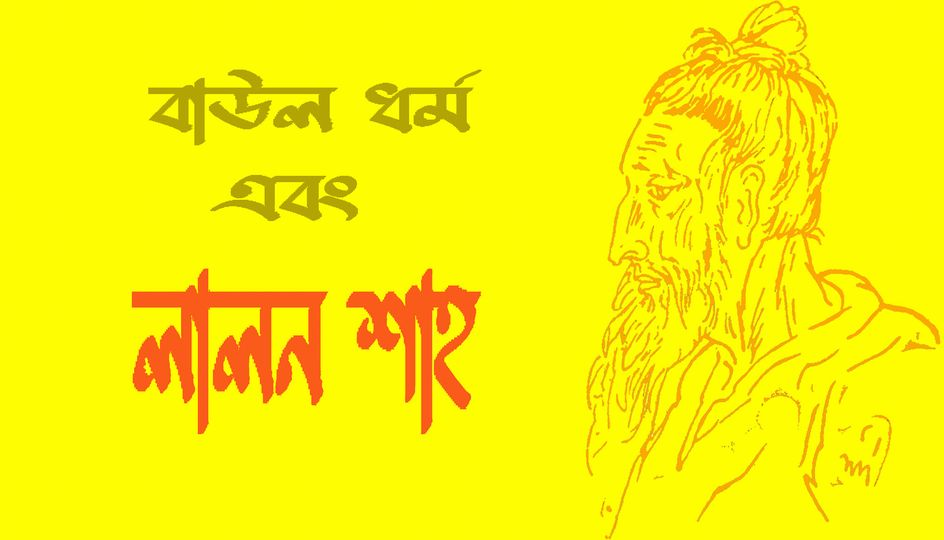
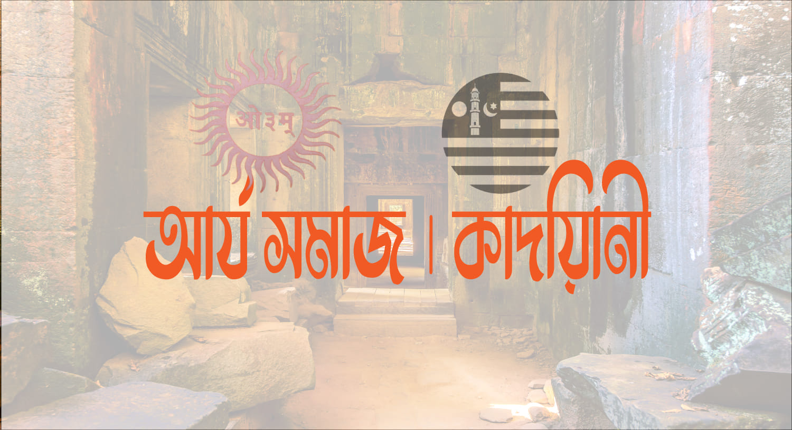

আমার দেখা যারাই দেশের জনসাধারণের উপর জুলুম নিপীড়ণে অভ্যস্ত, তারাই কোন না কোন সময় ভূতের পূজা করে নিজের উপর সবচেয়ে বড় ঝুলুম'টি(শির্ক) করে থাকেন। তথা মাজারের মৃত ব্যক্তির কাছে কল্যাণ অকল্যাণ কামনার মাধ্যমে শির্ক। অথবা চাওয়া পাওয়া এবং বেহেশতে যাওয়ার বাসনা নিয়ে পীরের দরবারে নজরানা পেশের মাধ্যমে শির্ক।
•|• আর স্মরণ কর, যখন লুকমান তার পুত্রকে উপদেশ দিতে গিয়ে বলেছিল, ‘প্রিয় বৎস, আল্লাহর সাথে শিরক করো না; নিশ্চয় শিরক হল বড় যুলম'। [সূরা লুকমান; ৩১/১৩]
ধর্মীয় অজ্ঞতা আর আবেগ অনুভূতির দূর্বলতা থেকে আমাদের দেশে বহুকাল ধরে গড়ে উঠেছে হাজারো পীর মুরিদের খানকা, পরকালের পাথেয় অর্জন এবং বেহেশতে যাওয়ার বাসনা নিয়ে লাখে লাখে মানুষ জড়ো হয়েছে পীর খানকার বেষ্টনীতে, যেখানে মুরিদদের জান্নাত পাইয়ে দেয়ার নামে হাতিয়ে নেয়া হয় লক্ষ কুটি টাকার ধন সম্পদ।
হুসেইন মুহাম্মদ এরশাদ বাংলাদেশের সাবেক সেনাপ্রধান ও রাজনীতিবিদ যিনি ১৯৮৩ থেকে ১৯৯০ সাল পর্যন্ত বাংলাদেশের রাষ্ট্রপতি ছিলেন। এরশাদ চাচা আটরশী দরবারের মুরিদ ছিলেন, প্রতিনিয়ত আসা-যাওয়া ছিল পীরের দরবারে, নিজে না আসতে পারলেও প্রতিনিধি পাঠাতে ভুল করতেন না আটরশীর পীর হাসমত উল্লাহর সমীপে। ঠিক ও-ই সময়টায় আটরশী দরবার অঙ্গুল ফুলে কলাগাছ হয়ে উঠে, ভক্ত আর প্রভাব প্রতিপত্তিতে টইটম্বুর হয়ে উঠে।
এরশাদ চাচার ক্ষমতার বাতি যখন নিভোনিভো করে জ্বলছিল, তখন হাসমত উল্লাহর হাত ধরে ১৪ অক্টোবর ১৯৮৯ সালে গড়ে উঠল নতুন রাজনৈতিক দল বিশ্ব জাকের মঞ্জিল, গণতন্ত্র ভোটের রাজনীতিতে বিরোধী দল থাকা অত্যাবশকীয় শর্ত, এক্ষেত্রে বিশ্ব জাকের মঞ্জিলের গুরুত্ব অপরিসীম।
ভাগ্যের কি নির্মম পরিহাস পাতানো প্রধান বিরোধী দল দিয়ে ক্ষমতায় থাকতে চাওয়া চাচা, আমৃত্যু অন্যের পাতানো প্রধান বিরোধী দল হিসেবেই মৃত্যুবরণ করেছেন।
•°• আজকের লিখা পীর সাহেবর আকিদ্বার কিছু অংশ উপস্থাপন করে শেষ করছি।
•|• বিশ্ব জাকের মঞ্জিল, ২৫ই ফেব্রুয়ারী ১৯৮৪ ইং এর প্রকাশিত সংবাদঃ পীর সাহেব বলেন, “হিন্দু, মুসলমান, বৌদ্ধ ও খৃষ্টানগণ নিজ নিজ ধর্মের আলোকেই সৃষ্টিকর্তার নৈকট্য অর্জনের চেষ্টা করতে পারে”।
•|• পরকালে মুক্তির জন্য ইসলাম ধর্ম গ্রহণের আবশ্যকতা নেই।
যেমন পীর ছাহেব বলেছেন, ‘হিন্দু, মুসলমান, বৌদ্ধ ও খৃষ্টানগণ নিজ নিজ ধর্মের আলোকেই সৃষ্টিকর্তার নৈকট্য অর্জনের চেষ্টা করতে পারে এবং তাহ’লেই কেবল বিশ্বে শান্তি আসতে পারে’ (আটরশীর কাফেলা, সংকলনে মাহফূযুল হক, আটরশীর দরবার থেকে প্রকাশিত, ৮৯ পৃঃ, সংস্করণ-১৯৮৪, তাসাউফ, তত্ত্ব ও পর্যালোচনা, ১৪৭ পৃঃ, প্রকাশকাল-২০০০ খৃঃ)।
•|• ভাল-মন্দ পীরের হাতে। পীর ছাহেব বলেছেন, এনায়েতপুরী ছাহেব তিরোধানের পূর্বে আমাকে বলে গেছেন, ‘বাবা তোর ভাল-মন্দ উভয়টাই আমার হাতে রইল। তোর কোন চিন্তা নেই’ ——(শাহছুফী হযরত ফরিদপুরী ছাহেবের নসিহত, ৩/১১১ পৃঃ, প্রকাশক : পীরজাদা মোস্তফা আমীর মুজাদ্দেদী, বিশ্ব জাকের মঞ্জিল ফরিদপুর, ৩য় মুদ্রণ ১লা মে-১৯৯৯ খৃষ্টাব্দ)।
•|• আটরশী পীর সাহেব বলেন, আমাকে আমার পীর এনায়েতপুরী সাহেব বলেন বাবা তোর ভাল মন্দ সব আমার হাতে। তোর কোন ধরনের চিন্তা নেই । (ফরিদপুরী সাহেবের নসিহত ৩/১১।)
•|• আটরশী পীর বলেন দুনিয়াতে সব ধরনের বিপদ আপদ হতে রক্ষা করিবার ক্ষমতা পীর এর হাতে । (হযরত ফরিদপুরী সাহেবের নসিহত ৬/ ৩৬ পৃষ্টা।)
•|• আটরশী পীরের আকিদ্বা মতে পরকালে মুক্তি পাবার জন্য ইসলাম ধর্ম গ্রহন করার দরকার নেই। যে কোন ধর্ম থেকেই মুক্তি পাওয়া সম্ভব। (তাসাউফও তত্ত্বপর্ব – ১৪৭ পৃষ্টা।)
Ismail Riyad
21.03.2024
"আমলাতান্ত্রিক দেশে রাজনীতি
আমলাতান্ত্রিক দেশে রাজনীতির প্রধান এবং অন্যতম পাঠ হল; আমলা ম্যানেজমেন্ট। এখানে সরকারের ভূমিকা রাখাল বালকের ন্যায় রক্ষণশীল পাহারাদার। মেষপালে রাখাল তার শিক্ষা এবং বাস্তবিক দক্ষতার উপর প্রভাব বিস্তার করে। রাখাল বালক'কে মেষপাল রক্ষায় প্রত্যক্ষভাবে যেমন সজাগ দৃষ্টি রাখে, ঠিক তেমনি হিংস্র নেকড়ে/কুকুর এর আশ্রয় নিতে হয়। অত:পর হতে পারে প্রচন্ড দুরদর্শিতার মাঝে নিয়ন্ত্রণহীন মেষ শাবক'ই রাখাল বালকের ধ্বংসের অন্যতম কারণ। এখানে পুঁ|জিবাদী মহল প্রভুর ভূমিকায় দায়িত্ব পালন করে, অন্যদিকে আমজনতার প্রভাব রসালো আমের মতো! যাদের ছাল ছাড়িয়ে আঁটিসহ চুষে খেয়ে, ছুড়ে ফেলা হয়।
এই যে সংখ্যাধিক্যের স্পর্শকাতর বিশ্বাস আবেগ অনুভূতির যায়গা; ধর্ম সমাচার নিয়ে কুরুচিপূর্ণ মন্তব্য! এই যে তার পিছনে দাড়িয়ে থাকা সফেদ টুপি ওয়ালা এবং মুখভর্তি দাড়ি নিয়ে স্লোগান দেয়া নেহাৎ ইবাদত গুজার ইসলামি চিন্তাবিদরা, যাদের হাসির উৎক্ষেপনে বাতাসে মিলিয়ে গেল আবেগের মূর্ছনা! অথচ এরাই সেই ব্যক্তি; যারা মসজিদ কমিটির প্রধান, মাহফিল কমিটির প্রধান! কোথায় তাদের আদর্শ! কিসের উপর ভিত্তি করে তাদের ধর্ম বিশ্বাস!? এই যে শতশত যুবকের মেলা দেখছেন; তাদের অধিকাংশই মুসলিম পরিবারের সন্তান, যাদের অধিকাংশই ফি|লি|স্তিন, কা|শ্মী|র, উইগর মুক্তির তামান্নায় সামাজিক যোগাযোগ গরম করে রাখে, সমাজে হুজুরের ভূমিকা নিয়ে প্রশ্ন তুলে! এখন তাদের ধর্মীয় অনুভূতির কি হয়ে গেলো! যার জন্য তারা জ্বলে উঠতে পারছেনা!? গতকাল একটা লেখায় বলেছিলাম; মানুষের বিশ্বাস; যুক্তি দলিলের উর্ধ্বে থাকে। বিশ্বাসের সাথে আবেগ যুক্ত হলে; মুক্তি/দাসত্ব - জ্ঞান/অজ্ঞতা আচ্ছন্ন করে ফেলে।
এই যে হ্যামিলনের বাঁশিওয়ালার পিছনে ইদুর ছুটার বিরামহীন পথচলা, তবে কি আমাদের অবস্থান, আমাদের ভবিষ্যৎ, উন্মুক্ত খাদে পড়ে আত্মহুতির অপেক্ষার বৈ কি!
গণতন্ত্র তথা সেকোলারিজম পুঁজিবাদী জীবন দর্শনে ধর্মের কোন উল্লেখযোগ্য ভূমিকা নেই। ধর্ম সেখানে সাক্ষী গোপালের মতো। রাষ্ট্র বা সরকার যতটা আচরণের সুযোগ দেয় ততটাই মাত্র ব্যক্তি ধর্মীয় দায়িত্ব-কর্তব্য পালনের সুযোগ বা স্বাধীনতা পায়। পুঁ|জি|বাদে ধর্ম আপোষ রফা করেছে রা|ষ্ট্র ক্ষমতার সাথে। শিল্প বি|প্লবের ফলে উদ্ভূত পরিস্থিতিতে পুঁ|জি|র গুরুত্ব যখন ক্রমাগত বৃদ্ধি পেতে থাকে রা|ষ্ট্র ক্ষমতার উপরও তার প্রভাব পরিলক্ষিত হতে থাকে। ক্রমে পুঁ|জিই হয়ে ওঠে সমাজের প্রধান নিয়ামক শক্তি। এই প্রেক্ষিতে ধর্মের সাথে আপোষ রফার জন্যে তৈরি হলো নতুন মতবাদ- ধর্মনিরপেক্ষতা বা সেকোলারিজম। সেকোলারিজমের মৌখিক বক্তব্য যাই হোক, বাস্তব অবস্থা হলো ধর্মহী|নতা। রা|ষ্ট্রে|র অনুমোদন ও প্রদত্ত সুযোগ সুবিধার মাত্রার উপরেই ধর্মনিরপেক্ষতা ধর্মহীনতায় রূপান্তরিত হওয়া না-হওয়া সম্পূর্ণতঃ নির্ভরশীল। ধর্মীয় শিক্ষার পরিবেশ রুদ্ধ করে, ধর্মাচরণের সুযোগ সংকীর্ণ করে, ধর্মীয় নেতাদের সামাজিক গুরুত্ব ও মর্যাদা হ্রাস করে, ধর্মীয় নীতিমালার উপর পুঁজিবাদের নিয়ম ও স্বার্থের প্রাধান্য দিয়ে পুঁজিবাদী সমাজ ব্যক্তিকে আসলে ধর্মহী|নতা তথা স্বেচ্ছাচারিতার দিকেই ক্ৰমান্বয়ে ঠেলে দেয়।
পুঁজিবাদী সভ্যতা, ভোগবাদীর যে জীবনকে গ্রহণ করেছে তা বিস্ময়কর। মেট্রোশহরে যুবক-যুবতীরা আজ ভোগ-বিলাসপূর্ণ জীবন যাপনের জন্যে পাল্লা দিয়ে প্রতিযোগিতায় নেমেছে। মদ, জুয়া, ডিসকো নাচ, ক্যাবারে, পপ সঙ্গীত, ম্যাকডোনাল্ডের ফাস্ট ফুড, সফ্ট ড্রিংক হতে শুরু করে কালোবাজারী, চোরাকারবারী ও বেশ্যাবৃত্তি কিছুই বাদ নেই। সবই হাতের নাগালে পাবার জন্যে শুরু হয়ে গেছে তীব্র প্রতিদ্বন্দ্বিতা। তারা পাশ্চাত্যের উদ্দাম, উচ্ছৃংখল ও নৈতিকতাহীন জীবনের অন্ধ অনুকরণে মেতেছে ব্যক্তি স্বাধীনতার নামেই। ইসলামের ভারসাম্যপূর্ণ ও শান্তিময় জীবন তাদের কাছে অজ্ঞাত। তাদের কাছে তা তুলে ধরার সুযোগ ধ্বংস করেছে সমা*তন্ত্র ও সাম্যবাদের মোড়লরাই ।
গণতন্ত্র নিয়ে বিখ্যাত কিছু ব্যক্তিদের চিন্তা চেতনা;
প্লেটো তার রিপাবলিক গ্রন্থে গণতন্ত্রকে মূর্খের শাসন বলে অভিহিত করেছেন। তার মতে, সমাজে বুদ্ধিমানের চেয়ে মূর্খ ও অবিবেচকের সংখ্যাই বেশী। তাই সংখ্যাধিক্যের শাসনের অর্থ এদেরই শাসন।
এমিল ফাগুয়ের মতে বিজ্ঞ ও বিদগ্ধজনেরা নির্বাচনের হট্টগোলে যেতে নারাজ । দুয়ারে দুয়ারে ধর্ণা দিয়ে ভো|ট ভিক্ষাতেও তারা অসমর্থ। ফলে গণতান্ত্রিক শাসন ব্যবস্থায় সত্যিকার বিজ্ঞজনদের অবদান রাখার কোনই সুযোগ নেই।
টেলি র্যাণ্ড গণতন্ত্রকে 'শয়তানের শাসন ব্যবস্থা' হিসেবে অভিহিত করেছেন।
ঐতিহাসিক লেকী বলেন গণতন্ত্র কোনক্রমেই শ্রেষ্ঠতম প্রশাসনিক ব্যবস্থার নিশ্চয়তা দেয় না। অনুরূপ অভিমত ব্যক্ত করেছেন স্যার হেনরী মেইন। উপরন্তু গণতন্ত্র শুধু অপচয়ধর্মী ব্যবস্থাই না, দু|র্নীতির প্রশ্রয়দানকারীও বটে। পৃথিবীর যে-কোন গণতান্ত্রিক দেশের সরকারের প্রতি নজর দিলে এ সত্য সহজেই উপলব্ধি করা যাবে।
Ismail Riyad
19.03.2024
দেওয়ানবাগী। মাহবুব-এ খোদা
দেওয়ানবাগ দরবারের ওয়েবসাইটে দেয়া তথ্য অনুযায়ী, তার পুরো নাম মাহবুব-এ খোদা। তবে ভক্তদের কাছে তিনি 'দেওয়ানবাগী' হিসাবে পরিচিত। ১৯৪৯ সালের ১৪ই ডিসেম্বর ব্রাক্ষ্মণবাড়িয়ার আশুগঞ্জে জন্মগ্রহণ করেন। তিনি সেখানকার তালশহর কারিমিয়া আলিয়া মাদ্রাসা থেকে ফাজিল পর্যন্ত পড়াশোনা করেছেন।
ফরিদপুরের চন্দ্রপাড়া দরবারের প্রতিষ্ঠাতা আবুল ফজল সুলতানা আহমেদ চন্দ্রপুরীর মেয়ে হামিদা বেগমকে বিয়ে করেন। এর সুবাদে শ্বশুরের কাছ থেকে খিলাফত লাভ করেন। এর কিছুদিন পরে নিজেই নারায়ণগঞ্জে দেওয়ানবাগ নামের একটি স্থানে আস্তানা তৈরি করেন এবং নিজেকে সুফি সম্রাট হিসাবে পরিচয় দিতে শুরু করেন। সেখান থেকেই তার নামের সঙ্গে দেওয়ানবাগী শব্দটি যুক্ত হয়। পরবর্তীতে মতিঝিলের ১৪৭ আরামবাগে স্থায়ী দরবার গড়ে কার্যক্রম শুরু করেন।
দেওয়ানবাগী ব্যাক্তি হিসেবে ধূর্ত শিয়ালের মতো চালাক। তাই ধোকা দেয়ার লক্ষ্যবস্তু হিসেবে গ্রহণ করে নিয়েছেন; বিত্তবান হতাশ ব্যাবসায়ী এবং ইবাদাত বিমুখ জান্নাত প্রত্যাশি বিত্তশালী ব্যাক্তিবর্গদের। যাদের কাছে নির্দিষ্ট কিছু বানায়ট দুরুদ এবং মাসিক সাপ্তাহিক ডোনেশনের মাধ্যমে তিনি জান্নাত বিক্রি করে থাকেন! "লা হাওলা ওয়ালা কুওয়াতা ইল্লা বিল্লাহ"। ডোনেশন এবং দুরুদ: যা আমৃত্যু চালু রাখা প্রধান এবং প্রথম শর্ত। ডোনেশনের অবস্থা অনুযায়ী মুরিদ'দের বিভিন্ন খেতাবে ভূষিত করা হয়, যেমন; খাদেম, ইমাম, ইমাম হাহাদী, খেলাফত প্রাপ্ত শাহাজাদা ইত্যাদি....., যদিও উক্ত উপাধি নামমাত্র দেয়া হয়, কিন্তু বাস্তব জীবনে কাউকে অংশীদারত্বের পীর কিংবা বায়াতের অনুমতি দেয়া হয় না। এটাই একজন সফল উদ্যোক্তার অন্যতম বৈশিষ্ট্য। দেওয়ানবাগী মুরিদ'দের একমাত্র ইবাদত হচ্ছে 'মুরাকাবাহ', এক্ষেত্রে মুরিদরা নির্দিষ্ট দুরুদ পাঠ করে চোখ বন্ধ করে দেওয়ানবাগীকে কল্পনায় আনার চেষ্টা করে এবং কল্পনায় আসা চেহেরাকে "আল্লাহ" বলে দাবী করে থাকে(নাউজুবিল্লাহ)। তাদের যাবতীয় চাহিদা পূরনের জন্য 'মুরাকাবাহ' করে দেওয়ানবাগীকে কল্পনা করে এবং তার কাছে জাগতিক সকল কিছুর জন্য সাহায্য প্রার্থনা করে। দেওয়ানবাগী এবং তার মুরিদগণ যেসকল দুরুদ পাঠ করে ''আল্লাহ এবং রাসূল সল্লাল্লাহু আলাইহি ওয়াসাল্লাম'' কে দেখার দাবী করে, তার নমুনা দেওয়ানবাগী প্রণীত 'ওয়াজিফা' বই থেকে নিন্মে PDF আকারে দেয়া হল।
[নিন্মলিখিত তথ্যসূত্রঃ সংগৃহীত]
দেওয়ানবাগী পীর এর ভুল ভ্রান্তি বা মিথ্যাচার , ব্যাখ্যা ও দলিল বা রেফারেন্স সহ;
১। “আমার অসংখ্য মুরিদান স্বপ্ন ও কাশফের মাধ্যমে আল্লাহরদীদার লাভ করেছে। আমার স্ত্রী হামিদা বেগম ও আমারকন্যা তাহমিনা এ খোদা স্বপ্নের মাধ্যমে আল্লাহকে দাড়ী গোফ বিহীন যুবকের ন্যায় দেখতে পায়।” –(সুত্রঃ আল্লাহ কোন পথেঃ২৩)
২। সাংবাদিক সম্মেলনে তিনি বলেন “শুধু আমি নই, আমার স্ত্রী কন্যা সহ লক্ষ্য লক্ষ্য মুরিদানও আল্লাহকে দেখেছেন” –সুত্রঃ (সাপ্তাহিক দেওয়ানবাগ)
৩। “দেওয়ানবাগে আল্লাহ ও সমস্ত নবী রাসূল,ফেরেস্তারা মিছিল করে এবং আল্লাহ নিজে শ্লোগানদেন।” –সুত্রঃ (সাপ্তাহিক দেওয়ানবাগ, মার্চ ১৯৯৯ ইং)
৪। “আমি এক ভিন্নধর্মের লোককে ওজীফা ও আমল বাতলে দিলাম। ক’দিন পর ঐ বিধর্মী স্বপ্নযোগে মদিনায়গেল। নবিজীর হাতে হাত মিলালো। নিজেরসর্বাঙ্গে জিকির অনুভব করতে লাগলো। তারপর থেকে ওই বিধর্মী প্রত্যেক কাজেই অন্তরে আল্লাহর নির্দেশ পেয়ে থাকে।” –সুত্রঃ (মানতের নির্দেশিকাঃ২৩,সূফী ফাউন্ডেশন, ১৪৭ আরামবাগ, ঢাকা)
৫। “কোন লোক যখন নফসীর মাকামে গিয়ে পৌঁছে, তখন তাঁর আর কোন ইবাদাত লাগেনা।” – সুত্রঃ (দেওয়ানবাগী রচিত,আল্লাহ কোন পথে,পৃঃ ৯০)
৬। “জিব্রাইল বলতে আর কেও নন,স্বয়ং আল্লাহ-ই জিব্রাইল।” –সুত্রঃ (মাসিক আত্মার বাণী, ৫ম বর্ষ, ১ম সঙ্খ্যাঃ২১)
৭। “সূর্যোদয় পর্যন্ত সাহরী খাওয়ার সময়। সুভে সাদেক অর্থ প্রভাতকাল। হুজুরেরা ঘুমানোর জন্য তাড়াতাড়ি আযান দিয়ে দেয়। আপনি কিন্তু খাওয়া বন্ধ করবেন না। আযান দিয়েছে নামাজের জন্য। খাবার বন্ধের জন্য আযান দেয়া হয়না।” –সুত্রঃ (মাসিক আত্মার বাণী,সংখ্যাঃ নভেম্বরঃ ৯৯, পৃঃ ৯)
৮। “মানুষের জন্ম থেকে মৃত্যু পর্যন্ত হায়াতে জিন্দেগী কে পুলসিরা বলা হয়।” –সুত্রঃ (দেওয়ানবাগী রচিত, আল্লাহ কোন পথে, তৃতীয়সংস্করনঃ ৬০)
৯। “আল্লাহ থেকে বিচ্ছিন্ন হওয়ার ফলে আত্মা এক বিচ্ছেদ যাতনা ভোগ করতে থাকে। প্রভূর পরিচয় নিজের মাঝে না পাওয়া অবস্থায় মৃত্যু হলে সে বেঈমান হয়ে কবরে যাবে। তখন তাঁর আত্মা এমন এক অবস্থায় আটকে পড়ে যে, পুনরায় আল্লাহর সাথে মিলনের পথখুঁজে পায়না। আর তা আত্তার জন্য কঠিন যন্ত্রনাদায়ক।আত্মার এরূপ চিরস্থায়ী যন্ত্রনাদায়ক অবস্থাকেই জাহান্নাম বা দোযোখ বলা হয়।” –সুত্রঃ (দেওয়ানবাগী রচিত, আল্লাহ কোন পথেঃ ৪৪)
১০। দেওয়ানবাগী নিজেকে ইমাম মাহদী দাবী করেন।অতঃপর দরুদে মাহদী রচনা করে্ন ।দরুদে মাহদীঃ “আল্লাহুম্মা ছাল্লী আ’লা সাইয়্ওয়ালা আ’লা ইমাম মাহদী রাহমাতাল্লিল আলামীনওয়ালিহী ওয়াছাল্লীম।” ময়লার স্তূপে অর্ধমৃত ও বিবস্ত্র অবস্থায় রাসুল (সাঃ) কে দেখেছি।
১১। দেওয়ানবাগী ১৯৮৯ সালে নাকি একটি ব্যতিক্র মধর্দেখে ফেলেন। এ স্বপ্ন সম্পর্কে তিনি বলেন, “আমি দেখি ঢাকা ও ফরিদপুরের মধ্যবর্তী স্থান জুড়ে একবিশাল বাগান ফুলে- ফলে সুশোভিত। ওই বাগানে আমি একা একা হেটে বা হঠাত বাগানের একস্থানে একটি ময়লার স্তূপ আমার চোখে পড়ে।আমি দেখতে পাই ওই ময়লার স্তূপে রাসুল (সাঃ) এর প্রানহীন দেহ মোবারক পড়ে আছে। তাঁর মাথা মোবার কদক্ষিন দিকে আর পা মোবারক উত্তর দিকে প্রসারিত। বামপা মোবারক হাটুতে ভাজ হয়ে খারা অবস্থায় রয়েছে।আমি তাকে উদ্ধার করার জন্য পেরেশান হয়ে গেলাম।আমি এগিয়ে গিয়ে তাঁর বাম পায়ের হাটুতে আমার ডানহাত দ্বারা স্পর্শ করলাম। সাথে সাথেই তাঁর দেহমোবারকে প্রাণ ফিরে এল। তিনি চোখ মেলে আমারদিকে তাকালেন। মূহুর্তের মধ্যেই রাসূল (সাঃ) সুন্দর পোশাকে সুসজ্জিত হয়ে গেলেন।তিনি উঠে বসে হাসি মুখে আমার দিকে তাকিয়ে বললেন, হে ধর্মপূনর্জীবন দানকারী!ইতমধ্যেই আমার ধর্ম আরও পাঁচবার পূনর্জীবন লাভ করেছে।একথা বলে রাসূল(সাঃ)উঠে দাঁড়িয়ে হেটে হেটে সাথে চলে এলেন।এরপর আমার ঘুম ভেঙে গেল। ” – সুত্রঃ (দেওয়ানবাগীরস্বরচিত গ্রন্থ “রাসূল স. সত্যিই কি গরীব ছিলেন?” ১১-১২প্রকাশকালঃ জুন ১৯৯৯।)
১২। “দেওয়ানবাগী এবং তার মুরীদদের মাহফিলে স্বয়ং আল্লাহ্, সমস্ত নবী, রাসূল (সা), ফেরেস্তা,দেওয়ানবাগী ওতার মুর্শিদ চন্দ্রপাড়ার মৃত আবুল ফজলসহ সমস্তওলি আওলিয়া, এক বিশাল ময়দানে সমবেতহয়ে সর্বসম্মতিক্রমে দেওয়ানবাগীকে মোহাম্মাদী প্রচারক নির্বাচিতকরা হয়। অতঃপর আল্লাহ সবাইকে নিয়ে একমিছিল বেরকরে। মোহাম্মাদী ইসলামেরচারটি পতাকা চারজনের_যথাক্রমে আল্লাহ, রাসূল (সা),দেওয়ানবাগী এবং তার পীরের হাতে ছিল। আল্লাহ,দেওয়ানবাগী ও তার পীর প্রথম সারিতে ছিলেন।বাকিরা সবাই পিছনের সারিতে। আল্লাহনিজেইস্লোগান দিয়েছিলেন_ ”মোহাম্মাদী ইসলামেরআলো_ ঘরে ঘরে জ্বালো।”(সূত্রঃসাপ্তাহি দেওয়ানবাগী পত্রিকা- ১২/০৩/৯৯ )
১৩। দেওয়ানবাগীর এক মুরিদ বলে (নাম মাওলানা আহমাদুল্লাহ যুক্তিবাদী) “আমি স্বপ্নে দেখলামহযরত ইব্রাহীম (আ) নির্মিত মক্কারকাবা ঘরএবং স্বয়ং রাসূলুল্লাহ (সা) বাবে রহমতে হাজির হয়েছেন।আমাকে উদ্দেশ্য করে নবী করীম (সা)বলছেন_”তুমি যে ধারণা করছ যে, শাহ্ দেওয়ানবাগী হজ্জকরেননি আসলে এটা ভুল। আমি স্বয়ং আল্লাহর নবী মোহাম্মাদ (সা) তার সাথে আছি এবং সর্বণ থাকি। আরকাবা ঘরওতার সামনে উপস্থিত আছে। আমার মোহাম্মাদী ইসলাম শাহ্ দেওয়ানবাগী প্রচার করতেছেন।”এই হলো দেওয়ানবাগীর ভন্ড আকিদা ও উক্তি সমূহ,
এক নজরে দেওয়ানবাগীর কিছু আকিদা ও উক্তি সমূহঃ
“আমার অসংখ্য মুরিদান স্বপ্ন ও কাশফের মাধ্যমে আল্লাহর দীদার লাভ করেছে। আমার স্ত্রী হামিদা বেগম ও আমার কন্যা তাহমিনা এ খোদা স্বপ্নের মাধ্যমে আল্লাহকে দাড়ী গোফ বিহীন যুবকের ন্যায় দেখতে পায়।” –সুত্রঃ আল্লাহ কোন পথেঃ২৩
সাংবাদিক সম্মেলনে তিনি বলেন “শুধু আমি নই, আমার স্ত্রী কন্যা সহ লক্ষ্য লক্ষ্য মুরিদানও আল্লাহকে দেখেছেন” –সুত্রঃ সাপ্তাহিক দেওয়ানবাগ।
“দেওয়ানবাগে আল্লাহ ও সমস্ত নবী রাসূল, ফেরেস্তারা মিছিল করে এবং আল্লাহ নিজে শ্লোগান দেন।” –সুত্রঃ সাপ্তাহিক দেওয়ানবাগ, মার্চ ১৯৯৯ ইং।
“আমি এক ভিন্নধর্মের লোককে ওজীফা ও আমল বাতলে দিলাম। ক’দিন পর ঐ বিধর্মী স্বপ্নযোগে মদিনায় গেল। নবিজীর হাতে হাত মিলালো। নিজের সর্বাঙ্গে জিকির অনুভব করতে লাগলো। তারপর থেকে ওই বিধর্মী প্রত্যেক কাজেই অন্তরে আল্লাহর নির্দেশ পেয়ে থাকে।” –সুত্রঃ মানতের নির্দেশিকাঃ২৩, সূফী ফাউন্ডেশন, ১৪৭ আরামবাগ, ঢাকা।
“কোন লোক যখন নফসীর মাকামে গিয়ে পৌঁছে, তখন তাঁর আর কোন ইবাদাত লাগেনা।” –আল্লাহ কোন পথে,পৃঃ ৯০
“জিব্রাইল বলতে আর কেও নন, স্বয়ং আল্লাহ-ই জিব্রাইল।” –সুত্রঃ মাসিক আত্মার বাণী, ৫ম বর্ষ, ১ম সঙ্খ্যাঃ২১
“সূর্যোদয় পর্যন্ত সাহরী খাওয়ার সময়। সুভে সাদেক অর্থ প্রভাতকাল। হুজুরেরা ঘুমানোর জন্য তারাতারি আযান দিয়ে দেয়। আপনি কিন্তু খাওয়া বন্ধ করবেন না। আযান দিয়েছে নামাজের জন্য। খাবার বন্ধের জন্য আযান দেয়া হয়না।” –সুত্রঃ মাসিক আত্মার বাণী, সংখ্যাঃ নভেম্বরঃ ৯৯, পৃঃ ৯
“মানুষের জন্ম থেকে মৃত্যু পর্যন্ত হায়াতে জিন্দেগী কে পুলসিরাত বলা হয়।” –সুত্রঃ আল্লাহ কোন পথে, তৃতীয় সংস্করনঃ ৬০
“ আল্লাহ থেকে বিচ্ছিন্ন হওয়ার ফলে আত্মা এক বিচ্ছেদ যাতনা ভোগ করতে থাকে। প্রভূর পরিচয় নিজের মাঝে না পাওয়া অবস্থায় মৃত্যু হলে সে বেঈমান হয়ে কবরে যাবে। তখন তাঁর আত্মা এমন এক অবস্থায় আটকে পড়ে যে, পুনরায় আল্লাহর সাথে মিলনের পথ খুঁজে পায়না। আর তা আত্তার জন্য কঠিন যন্ত্রনাদায়ক। আত্মার এরূপ চিরস্থায়ী যন্ত্রনাদায়ক অবস্থাকেই জাহান্নাম বা দোযোখ বলা হয়।” –আল্লাহ কোন পথেঃ ৪৪
দেওয়ানবাগী নিজেকে ইমাম মাহদী দাবী করেন। অতঃপর দরুদে মাহদী রচনা করে্ন । দরুদে মাহদীঃ
“আল্লাহুম্মা ছাল্লী আ’লা সাইয়্যিদিনা মুহাম্মাদিউ ওয়ালা আ’লা ইমাম মাহদী রাহমাতাল্লিল আলামীন ওয়ালিহী ওয়াছাল্লীম। ”
ময়লার স্তূপে অর্ধমৃত ও বিবস্ত্র অবস্থায় রাসুল (সাঃ) কে দেখেছি।
দেওয়ানবাগী ১৯৮৯ সালে নাকি একটি ব্যতিক্রমধর্মী স্বপ্ন দেখে ফেলেন। এ স্বপ্ন সম্পর্কে তিনি বলেন, “ আমি দেখি ঢাকা ও ফরিদপুরের মধ্যবর্তী স্থান জুড়ে এক বিশাল বাগান ফুলে-ফলে সুশোভিত। ওই বাগানে আমি একা একা হেটে বেড়াচ্ছি। হঠাত বাগানের এক স্থানে একটি ময়লার স্তূপ আমার চোখে পড়ে। আমি দেখতে পাই ওই ময়লার স্তূপে রাসুল (সাঃ) এর প্রানহীন দেহ মোবারক পড়ে আছে। তাঁর মাথা মোবারক দক্ষিন দিকে আর পা মোবারক উত্তর দিকে প্রসারিত। বাম পা মোবারক হাটুতে ভাজ হয়ে খারা অবস্থায় রয়েছে। আমি তাকে উদ্ধার করার জন্য পেরেশান হয়ে গেলাম। আমি এগিয়ে গিয়ে তাঁর বাম পায়ের হাটুতে আমার ডান হাত দ্বারা স্পর্শ করলাম। সাথে সাথেই তাঁর দেহ মোবারকে প্রাণ ফিরে এল। তিনি চোখ মেলে আমার দিকে তাকালেন। মূহুর্তের মধ্যেই রাসূল (সাঃ) সুন্দর পোশাকে সুসজ্জিত হয়ে গেলেন। তিনি উঠে বসে হাসি মুখে আমার দিকে তাকিয়ে বললেন, হে ধর্ম পূনর্জীবন দানকারী! ইতমধ্যেই আমার ধর্ম আরও পাঁচবার পূনর্জীবন লাভ করেছে।
ভণ্ড পীর দেওয়ানবাগী সম্পর্কে লোমহর্ষক ১৯ টি তথ্য. ভন্ডপীর দেওয়ানবাগীর স্বরুপ উন্মোচনের স্বার্থে তার বলা কিছু কথা, তার অপকর্ম এবং তার সম্পর্কে ইসলামিক ফাউন্ডেশনের ফতোয়া নিচে তুলে ধরা হলো :
১. “‘দেওয়ানবাগী স্বপ্নে দেখেন ঢাকা এবং ফরিদপুরের মধ্যবর্তী স্থানে এক বিশাল বাগানে ময়লার স্তূপের উপর বিবস্ত্র অবস্থায় নবীজীর প্রাণহীন দেহ পড়ে আছে (নাওযুবিল্লাহ)। মাথা দণি দিকে, পা উত্তর দিকে প্রসারিত। বাম পা হাঁটুতে ভাঁজ হয়ে খাড়া আছে। আমি উদ্ধারের জন্য পেরেশান হয়ে গেলাম। তাঁর বাম পায়ের হাঁটুতে আমার ডান হাত দিয়ে স্পর্শ করার সাথে সাথে দেহে প্রাণ ফিরে এল। এবং তিনি আমাকে বললেন, ”হে ধর্মের পুনর্জীবনদানকারী, ইতিপূর্বে আমার ধর্ম পাঁচবার পুনর্জীবন লাভ করেছে।” ( সূত্র: রাসূল কি সত্যিই গরিব ছিলেন-দেওয়ানবাগ থেকে প্রকাশিত )
২. “একদিন ফজরের পর মোরাকাবারত অবস্থায় আমার তন্দ্রা এসে যায়। আমি তখন নিজেকে লুঙ্গি-গেঞ্জি পরিহিত অবস্থায় রওজা শরীফের নিকট দেখতে পাই। দেখি রওজা শরীফের উপর শুকনা পাতা এবং আগাছা জমে প্রায় এক ফুট পুরুহয়ে আছে। আমি আরো ল্য করলাম, রওজা শরীফে শায়িত মহামানবের মাথা মোবারক পূর্ব দিকে এবং মুখমণ্ডল দণি দিকে ফিরানো। এ অবস্থা দেখে আমি আফসোস করতে লাগলাম। এমন সময় পাতার নীচ থেকে উঠে এসে এ মহামানব বসলেন। তার বুক পর্যন্ত পাতার উপর বের হয়ে পড়ে। তিনি আমার দিকে তাকিয়ে বললেন, আপনি দয়া করে আমার রওজা পরিষ্কার করে দেবেন না ? আমি বললাম, জী, দেব। তিনি বললেন, তাহলে দিন না। এভাবে বারবার তিনবার বলায় আমি এক একটা করেপাতা পরিষ্কার করে দেই। এরপর আমার তন্দ্রা ভেঙে যায়।” ( সূত্র: রাসূল কি সত্যিই গরিব ছিলেন-দেওয়ানবাগ থেকে প্রকাশিত )
৩. “দেওয়ানবাগী এবং তার মুরীদদের মাহফিলে স্বয়ং আল্লাহ্, সমস্ত নবী, রাসূল (সা), ফেরেস্তা, দেওয়ানবাগী ও তার মুর্শিদচন্দ্রপাড়ার মৃত আবুল ফজলসহ সমস্ত ওলি আওলিয়া, এক বিশাল ময়দানে সমবেত হয়ে সর্বসম্মতিক্রমে দেওয়ানবাগীকে মোহাম্মাদী ইসলামের প্রচারক নির্বাচিত করা হয়। অত:পর আল্লাহ সবাইকে নিয়ে একমিছিল বের করে। মোহাম্মাদী ইসলামের চারটি পতাকা চারজনের_ যথাক্রমে আল্লাহ, রাসূল (সা), দেওয়ানবাগী এবং তার পীরের হাতে ছিল। আল্লাহ, দেওয়ানবাগী ও তার পীর প্রথম সারিতে ছিলেন। বাকিরা সবাই পিছনের সারিতে। আল্লাহ নিজেই স্লোগান দিয়েছিলেন_ ”মোহাম্মাদী ইসলামের আলো_ ঘরে ঘরে জ্বালো।” (সূত্র: সাপ্তাহিক দেওয়ানবাগী পত্রিকা- ১২/০৩/৯৯ )
৪. দেওয়ানবাগীর এক পা-চাটা চাকর বলে (নাম মাওলানা আহমাদুল্লাহ যুক্তিবাদী,) “আমি স্বপ্নে দেখলাম হযরত ইব্রাহীম (আ) নির্মিত মক্কারকাবা ঘর এবং স্বয়ং রাসূলুল্লাহ (সা) বাবে রহমতে হাজির হয়েছেন। আমাকে উদ্দেশ্য করে নবী করীম (সা) বলছেন_”তুমি যে ধারণা করছ যে, শাহ্ দেওয়ানবাগী হজ্জ করেননি আসলে এটা ভুল। আমি স্বয়ং আল্লাহর নবী মোহাম্মাদ (সা) তার সাথে আছিএবং সর্বণ থাকি। আর কাবা ঘর ও তার সামনে উপস্থিত আছে। আমার মোহাম্মাদী ইসলাম শাহ্দেওয়ানবাগী প্রচার করতেছেন। আমি যুক্তি খণ্ডনে যাবো না ।শুধু আপনাদের উপর বিষয়গুলো ছেড়ে দিলাম । কতো বড় ভণ্ড হলে এরকম বলতে পারে । একটা কথাও কোরআন হাদীস কিংবা ইজমা কিয়াসের ভিত্তিতে নয় । সব মনগড়া ।
৫) ভণ্ড পীরের কিছু লোমহর্ষক তথ্য : “তথাকথিত ছুফী সম্রাট দেওয়ানবাগী পীর জাল দলিলের মাধ্যমে জোর পূর্বক কয়েক কোটি টাকার জমি দখল করে নিয়েছে বলে অভিযোগ করেছেন জমির প্রকৃত মালিক আব্দুল গফুর। গত কয়েকমাস আগে ঢাকা রিপোর্টার্স ইউনিটি মিলনায়তনে আয়োজিত এক সাংবাদিক সম্মেলনে লিখিত বক্তব্যে তিনি এই অভিযোগ করেন। এ সময় উপস্থিত ছিলেন তার ছেলে মহিদুল ইসলাম, শহিদুল ইসলাম, শফিকুল ইসলাম প্রমুখ। লিখিত বক্তব্যে তিনি বলেন, ১৯৮৫ সালে বাংলাদেশ ব্যাংকের পিছনে ১৪২/১ দক্ষিণ কমলাপুরে ৮০ শতাংশ ভূমি ক্রয় করে। জমিটি ক্রয়ের পর থেকেই তথাকথিত পীর দেওয়ানবাগী তার সন্ত্রাসী বাহিনী দিয়ে দখলের পাঁয়তারা করে আসছিল। ভন্ডপীর দেওয়ানবাগীর সন্ত্রাসী বাহিনী গত ২০০২ সালে রাতের অন্ধকারে বাড়ির ভাড়াটিয়াদের জোর পূর্বক বেরকরে জমিটি দখল করে নেয়। ভূমি অফিসের কিছু অসাধু অফিসারে সাথে অবৈধ লেনদেন করে তিনি কাগজপত্র তৈরি করেন। জমি দখলের বিরুদ্ধে জজ কোর্টে মামলা করলে কোর্ট গত ২০০৩ সালে স্থগিতাদেশ প্রদান করে। উল্লেখ্য যে দেয়ানবাগীও তার সন্ত্রাসীচক্র উক্ত বাড়িতে বর্তমানে উটের খামার করে। এখন নিয়মিত শতাধিক সন্ত্রাসী সেখানে অবস্থান করে। তার সন্ত্রাসী বাহিনী মামলা উঠিয়ে নেয়ার জন্য নিয়মিত মোবাইলে হুমকি দিয়ে আসছে। এ ব্যাপারে মতিঝিল থানায় একাধিক জিডি করা হয়েছে। তিনি আরো অভিযোগ করে বলেন, উক্ত জমির উপর আদালতের স্থগিতাদেশ থাকার পরেও গত ১৪ সেপ্টেম্বর তার স্ত্রীকে সমাধি করা হয়। তার পালিত সন্ত্রাসীদের ভয়ে কেউ মুখ খুলতে সাহস পায় না। তিনি মতিঝিল ও আরামবাগ এলাকায় একাধিক বাড়ি দখল করে নিয়েছেন। তাই জমি ফেরত পেতে জমির প্রকৃত মালিক আব্দুল গফুর প্রশাসনের সহায়তা কামনা করেন।” ( দৈনিক সংগ্রাম )
৭ , “আমার অসংখ্য মুরিদান স্বপ্ন ও কাশফের মাধ্যমে আল্লাহর দীদার লাভ করেছে। আমার স্ত্রী হামিদা বেগম ও আমার কন্যা তাহমিনা এ খোদা স্বপ্নের মাধ্যমে আল্লাহকে দাড়ী গোফ বিহীন যুবকের ন্যায় দেখতে পায়।” (নাউযুবিল্লাহ) –সুত্রঃআল্লাহ কোন পথেঃ২৩ ৮ , সাংবাদিক সম্মেলনে সে বলে “শুধু আমি নই, আমার স্ত্রী কন্যা সহ লক্ষ্য লক্ষ্য মুরিদানও আল্লাহকে দেখেছেন” –সুত্রঃ সাপ্তাহিক দেওয়ানবাগ। ৯ , “দেওয়ানবাগে আল্লাহ ও সমস্ত নবী রাসূল, ফেরেস্তারা মিছিল করে এবং আল্লাহ নিজে শ্লোগান দেন।” –সুত্রঃ সাপ্তাহিক দেওয়ানবাগ, মার্চ ১৯৯৯ ইং। ১০ , “আমি এক ভিন্নধর্মের লোককে ওজীফা ও আমল বাতলে দিলাম। ক’দিন পর ঐ বিধর্মী স্বপ্নযোগে মদিনায় গেল। নবিজীর হাতে হাত মিলালো। নিজের সর্বাঙ্গে জিকির অনুভব করতে লাগলো। তারপর থেকে ওই বিধর্মী প্রত্যেক কাজেই অন্তরে আল্লাহর নির্দেশ পেয়ে থাকে।” (নাউযুবিল্লাহ) –সুত্রঃ মানতের নির্দেশিকাঃ২৩, সূফী ফাউন্ডেশন, ১৪৭ আরামবাগ, ঢাকা।
১১, “কোন লোক যখন নফসীর মাকামে গিয়ে পৌঁছে, তখন তাঁর আর কোন ইবাদাত লাগেনা।” –আল্লাহ কোন পথে,পৃঃ ৯০
১২ ,“জিব্রাইল বলতে আর কেও নন, স্বয়ং আল্লাহ-ই জিব্রাইল।”–সুত্রঃ মাসিক আত্মার বাণী, ৫ম বর্ষ, ১ম সঙ্খ্যাঃ২১
১৩ , “সূর্যোদয় পর্যন্ত সাহরী খাওয়ার সময়। সুভে সাদেক অর্থ প্রভাতকাল। হুজুরেরা ঘুমানোর জন্য তারাতারি আযান দিয়ে দেয়। আপনি কিন্তু খাওয়া বন্ধ করবেন না। আযান দিয়েছে নামাজের জন্য। খাবার বন্ধের জন্য আযান দেয়া হয়না।” (নাউযুবিল্লাহ) –সুত্রঃ মাসিকআত্মার বাণী, সংখ্যাঃ নভেম্বরঃ ৯৯, পৃঃ ৯
“ ১৪ , মানুষের জন্ম থেকে মৃত্যু পর্যন্ত হায়াতে জিন্দেগী কে পুলসিরাত বলা হয়।” –সুত্রঃ আল্লাহ কোন পথে, তৃতীয় সংস্করনঃ ৬০
১৫ ,“ আল্লাহ থেকে বিচ্ছিন্ন হওয়ার ফলে আত্মা এক বিচ্ছেদ যাতনা ভোগ করতে থাকে। প্রভূর পরিচয় নিজের মাঝে না পাওয়া অবস্থায় মৃত্যু হলে সে বেঈমান হয়ে কবরে যাবে। তখন তাঁর আত্মা এমন এক অবস্থায় আটকে পড়ে যে, পুনরায় আল্লাহর সাথে মিলনের পথ খুঁজে পায়না। আর তা আত্তার জন্য কঠিন যন্ত্রনাদায়ক। আত্মার এরূপ চিরস্থায়ী যন্ত্রনাদায়ক অবস্থাকেই জাহান্নাম বা দোযোখ বলা হয়।”(নাউযুবিল্লাহ) –আল্লাহ কোন পথেঃ ৪৪
১৬ ,দেওয়ানবাগী নিজেকে ইমাম মাহদী দাবী করেন। অতঃপর দরুদে মাহদী রচনা করে্ন । দরুদে মাহদীঃ (নাউযুবিল্লাহ) “আল্লাহুম্মা ছাল্লী আ’লা সাইয়্যিদিনা মুহাম্মাদিউ ওয়ালা আ’লা ইমাম মাহদী রাহমাতাল্লিল আলামীন ওয়ালিহী ওয়াছাল্লীম। ”
১৭ , ময়লার স্তূপে অর্ধমৃত ও বিবস্ত্র অবস্থায় রাসুল (সাঃ) কে দেখেছি। (নাউযুবিল্লাহ) মীন যালীক
১৮ , দেওয়ানবাগী ১৯৮৯ সালে নাকি একটি ব্যতিক্রমধর্মী স্বপ্ন দেখে ফেলেন। এ স্বপ্ন সম্পর্কে তিনি বলেন, “ আমি দেখি ঢাকা ও ফরিদপুরের মধ্যবর্তী স্থানজুড়ে এক বিশাল বাগান ফুলে-ফলে সুশোভিত। ওই বাগানে আমি একা একা হেটে বেড়াচ্ছি। হঠাত বাগানের এক স্থানে একটি ময়লার স্তূপ আমার চোখে পড়ে। আমি দেখতে পাই ওই ময়লার স্তূপে রাসুল (সাঃ) এর প্রানহীন দেহ মোবারক পড়ে আছে। তাঁর মাথা মোবারক দক্ষিন দিকে আর পা মোবারক উত্তর দিকে প্রসারিত। বাম পা মোবারক হাটুতে ভাজ হয়ে খারা অবস্থায় রয়েছে। আমি তাকে উদ্ধার করার জন্য পেরেশান হয়ে গেলাম। আমি এগিয়ে গিয়ে তাঁর বাম পায়ের হাটুতে আমার ডান হাত দ্বারা স্পর্শ করলাম। সাথে সাথেই তাঁর দেহ মোবারকে প্রাণ ফিরে এল। তিনি চোখ মেলে আমার দিকে তাকালেন। মূহুর্তের মধ্যেই রাসূল (সাঃ) সুন্দর পোশাকে সুসজ্জিত হয়ে গেলেন। তিনি উঠে বসে হাসি মুখে আমার দিকে তাকিয়ে বললেন, হে ধর্ম পূনর্জীবন দানকারী! ইতমধ্যেই আমার ধর্ম আরও পাঁচবার পূনর্জীবন লাভ করেছে। একথা বলে রাসূল (সাঃ) উঠে দাঁড়িয়ে হেটে হেটে আমার সাথে চলে এলেন। এরপর আমার ঘুম ভেঙে গেল। ” (নাউযুবিল্লাহ)–সুত্রঃ দেওয়ানবাগীর স্বরচিত গ্রন্থ
১৯ , “রাসূল স. সত্যিই কি গরীব ছিলেন?” ১১-১২ প্রকাশকালঃ জুন ১৯৯৯।
Ismail Riyad
19.03.2024
"‘ভবের গান’ বা ‘ভাবসঙ্গীত’ এবং বাউল ধর্ম।
বাউল গানের সাথে পরিচয় ঘটেনি এমন মানুষের সংখ্যা খুব কমই আছে, ইউনেস্কো ২০০৫ সালে বিশ্বের ঐতিহ্যসমূহের মাঝে বাউল গানকে অন্যতম শ্রেষ্ঠ সম্পদ হিসেবে ঘোষণা করে। এবং ২০০৮ সালে আনুষ্ঠানিকভাবে ‘ইনট্যানজিবল কালচারাল হেরিটেজ’-এর তালিকাভুক্ত করে। কিন্তু এমন খবর ক'জন রেখেছে; বাউলদের গান তাদের ইবাদতের অনন্য পদ্ধতি, এটা কোন বিনোদনের মাধ্যম নয়!
যারাই একে বিনোদন ভেবে ডুব দিয়েছে, তারাই পরোক্ষভাবে বাউল প্রভুদের ইবাদত শুরু করেছে। বিশেষ করে বাউল ধর্মের অন্যতম প্রভু বাউল লালনের শ্রদ্ধায় মুসলিম তরুণ প্রজন্ম সিজদাহ্ লুটিয়ে পরে! এরচেয়ে বড় হতভাগা আর কে হতে পারে, যে স্রষ্টা প্রণীত পরিপূর্ণ জীবন ব্যাবস্থা "ইসলাম" ছেড়ে কুফরের দিকে আহ্বান কারী মানব রচিত ধর্মে বুদ হয়ে আছে! বাস্তব জীবনকে থেকে বলি; আমরা যখন মেসে থাকতাম তখন প্রতিরাতে গানের আসর বসত, এই আসরে অংশগ্রহণকারী সকলেই ছিল ইবাদত বিমুখ এমন'কি সাপ্তাহিক নামাযে ও তাদের দেখা যেতো না, সিদ্ধি আর সিগারেটের ধোঁয়ার মাঝে গান-ই ছিল তাদের মূল ইবাদত। সন্ধ্যা ঘনিয়ে আসলে দূর দূরান্তে থেকে বন্ধু এবং সমমনা আদর্শে বিশ্বাসী ব্যাক্তিবর্গরা উপস্থিত হত আমাদের আসরে অংশগ্রহণ করার জন্য, কত-শত কর্ম ব্যস্ততা এবং অসহনীয় জ্যামজট ঠেলে এই গানের আসরে যোগ দিতে কারোর চেষ্টার কমতি ছিল না। অথচ বাসার নিচে মসজিদে যাওয়ার শক্তি কারোর শরীরে ছিল না, আজও হয়তো সেই শক্তি অনেকের না-ই! মুসলিম সন্তানের এমন অধঃপতনের জন্যই বিশ্বজুড়ে কত-শত ভ্রান্ত ধর্মের সৃষ্টি হয়েছে, সেই একই সূত্র ধরে বাউল ধর্মের উৎপত্তি। বাউল ধর্মে প্রভাবিত মুসলিম যুবক'রা যে অজুহাতে ইবাদত করে না, উদাহরণ; আমার মনে ইবাদতের ইচ্ছে না আসলে এই ইবাদত গ্রহনযোগ্য হবে না, এই ইবাদত কইরা লাভ নাই! 'সুবহানাল্লাহ' অথচ আল্লাহ সুবহানাহু ওয়াতাআ'লা বলেন; { وَ مَا خَلَقۡتُ الۡجِنَّ وَ الۡاِنۡسَ اِلَّا لِیَعۡبُدُوۡنِ} "আর জিন ও মানুষকে কেবল এজন্যই সৃষ্টি করেছি যে তারা আমার ইবাদাত করবে।"
And I did not create the jinn and mankind except to worship Me.
[সূরা আয-যারিয়াত, ৫১:৫৬]
আপনি কেন ভুলে যাচ্ছেন, আল্লাহ সুবহানাহু ওয়াতাআ'লা আপনাকে আপনার ইচ্ছের/নফসের গোলামী করার জন্য সৃষ্টি করেন নাই।
মহান আল্লাহ আরো বলেন:
{إَنَّ الَّذِينَ لاَ يَرْجُونَ لِقَاءَنَا وَرَضُواْ بِالْحَياةِ الدُّنْيَا وَاطْمَأَنُّواْ بِهَا وَالَّذِينَ هُمْ عَنْ آيَاتِنَا غَافِلُونَ * أُوْلَـئِكَ مَأْوَاهُمُ النُّارُ بِمَا كَانُواْ يَكْسِبُونَ} [يونس/7، 8].
অর্থ: নিশ্চয় যারা আমাদের সাক্ষাতের আশা পোষণ করে না, দুনিয়ার জীবন নিয়েই সন্তুষ্ট রয়েছে এবং এতেই পরিতৃপ্ত থাকে, আর যারা আমাদের নিদর্শনাবলী সম্পর্কে গাফিল, তাদেরই আবাস আগুন; তাদের কৃতকর্মের জন্য। - (সূরা ইউনূস:৭-৮)
পৃথিবী জুড়ে এমন কোন জাতি ধর্ম খোঁজে পাওয়া যাবে না, যাদের অন্তর ইসলামের প্রতি বিদ্বেষ পোষণ করে না। এই বিদ্বেষ পরায়ণ অন্তর প্রত্যক্ষ পরোক্ষভাবে কত মত, কত পথের জন্ম দিয়েছে তা কারোর অজানা নয়। তবে কেন বারবার আমরা সেই ভিন্ন পথের দিকেই ছুটে চলি! রূপকথার হ্যামিলনের বাঁশিওয়ালার পিছেই কেন আমাদের এই ইঁদুর ছুটা! বাঁশিওয়ালার সুরের মূর্ছনায় উদাসীন পরিবার গুলো কি সন্তান হারিয়ে আজও সচেতন হতে পেরেছে! না-কি তারাই জাদুগ্রস্থ হয়ে আছে!.
☞ বাউল ধর্ম। এ ধারাটি পুষ্ট হয়েছে পঞ্চদশ শতাব্দীর তান্ত্রিক বৌদ্ধ ধর্মের ভাব, রাধাকৃষ্ণবাদ, বৈষ্ণব সহজিয়া তত্ত্ব ও সুফি দর্শনের প্রভাবে। কোনো কোনো ইতিহাসবিদের মতে, বাংলাদেশে বাউল মতের উদ্ভব সতের শতকে। এ মতের প্রবর্তক হলেন আউল চাঁদ ও মাধব বিবি। গবেষকদের মতে, নিজ দেহের মধ্যে ঈশ্বরকে পাওয়ার তীব্র ব্যাকুলতা থেকে বাউল ধারার সৃষ্টি। বাউল সাধকদের সাধনার মাধ্যম হচ্ছে গান। সাধকের কাছে সাধন-ভজনের গূঢ়তত্ত্ব প্রকাশ পায় গানের মাধ্যমেই। প্রত্যেক মানুষের অন্তরে যে পরম সুন্দর ঈশ্বরের উপস্থিতি, সেই অদেখাকে দেখা আর অধরাকে ধরাই বাউল সাধন-ভজনের উদ্দেশ্য। বাউলের ভূখণ্ড তার দেহ, পথপ্রদর্শক তার গুরু, জীবনসঙ্গী নারী, সাধনপথ বলতে সুর, আর মন্ত্র বলতে একতারা। এঁদের ও অন্যান্য বাউল সাধকের রচিত গান গ্রামাঞ্চলে ‘ভাবগান’ বা ‘ভাবসঙ্গীত’ নামে পরিচিত। কেউ কেউ এসব গানকে ‘শব্দগান’ ও ‘ধুয়া’ গান নামেও অভিহিত করেন। বাউল গান সাধারণত দুপ্রকার দৈন্য ও প্রবর্ত। এ থেকে সৃষ্টি হয়েছে রাগ দৈন্য ও রাগ প্রবর্ত। এই ‘রাগ’ অবশ্য শাস্ত্রীয় সঙ্গীতের রাগ নয়, ভজন-সাধনের রাগ। এ গান চড়া সুরে গীত হয়। সঙ্গে একতারা, ডুগডুগি, খমক, ঢোলক, সারিন্দা, দোতারা ইত্যাদি বাদ্যযন্ত্র বাজানো হয়। তাল দাদরা, কাহারবা, কখনও ঝুমুর, একতালা কিংবা ঝাঁপতাল।
সাধন সঙ্গীত সাধারণত ঐ সমস্ত সঙ্গীত সমূহ বোঝানো হয়েছে, যা সৃষ্টিকর্তা বা পরমআত্নাকে উদ্যেশ্য করে তাঁর পরম সান্নিধ্য লাভের জন্য করা হয়ে থাকে। গুরু লালন শাহ্ তাঁর গানের কথার সমস্ত বিষয় নির্ধারন করেছিলেন দেহের গুঢ় তত্ব থেকে, আবার অন্যান্য সাধন গন তাঁদের গানের কথা নিয়েছেন প্রকৃতি প্রেম ও ভিন্ন ভিন্ন অনুভব থেকে। মানবকল্যাণ কামনায় সবচেয়ে বেশি সুর ধ্বনিত হয়েছে মরমি সাধক লালনের গানে। লালনের সাম্যবাদী চিন্তাই আজকের উদার মানবতাবাদ। লালন বলেন, ‘এমন সমাজ কবে গো সৃজন হবে/যেদিন হিন্দু মুসলমান/বৌদ্ধ খ্রিস্টান/জাতি গোত্র নাহি রবে।’ বস্তুত উনিশ শতকে লালনের গান তার সর্বজনীন আবেদনের কারণে জনপ্রিয় হয়ে ওঠে। লালনের কারণেই হিন্দু, মুসলমান সম্প্রদায়ের দেহতত্ত্ববাদীরা সব বিভেদ ভুলে যুত সাধনায় মিলিত হন।
☞ বাউল শব্দের উৎপত্তিঃ
কেউ কেউ বলেছেন, সংস্কৃত “বাতুল” শব্দ থেকে বাউল শব্দটির উৎপত্তি, এই গবেষকদের মতে- যে সব লোক প্রকৃতই পাগল, তাই তারা কোনো সামাজিক বা ধর্মের কোনো বিধিনিষেধ মানে না, তারাই বাউল। কেউ বলেছেন “বাউর” শব্দ থেকে বাউলের উৎপত্তি, এর অর্থ এলো-মেলো, বিশৃঙ্খল, পাগল।
বাউল শব্দটির উৎপত্তি নিয়ে মতান্তর রয়েছে। অতিপ্রাচীনকাল থেকে বাউল শব্দটির প্রচলন লক্ষ করা যায়। আনুমানিক সপ্তদশ শতক থেকে বাউল নামের ব্যবহার ছিল বলে জানা যায়, চৈতন্যচরিতামৃত গ্রন্থের আদিলীলা অংশে এর ব্যবহার লক্ষ করা করা যায়, চৈতন্যচরিতামৃত গ্রন্থে মহাপ্রভু, রামানন্দ রায় ও সনাতন গোস্বামীর নিকট কৃষ্ণ বিরহ বিধুর নিজেকে মহাবাউল হিসেবে আখ্যায়িত করেছেন। সেই থেকে অনুমান করা হয়,বাউল শব্দের উৎপত্তির কথা। বাউলের রয়েছে নানাবিধ শাখাপ্রশাখা, একেক সম্প্রদায়ের বাউলেরা একেক মত অনুসারী, সেগুলো তাদের সম্প্রদায়ভেদে ধর্মীয় উপাসনার একটি অংশ।
☞ পেশা এবং পোশাকঃ
পুরুষরা সাধারণত সাদা লুঙ্গি এবং সাদা আলখাল্লা এবং মহিলারা সাদা শাড়ি পরিধান করে। তাদের কাধে থাকে ভিক্ষার ঝুলি। তারা সন্তান ধারণ বা প্রতিপালন করতে পারে না। এই ধরনের জীবনকে বলা হয় ‘জ্যান্তে মরা’ বা জীবন্মৃত। মহিলাদেরকে বলা হয় সেবাদাসী। পুরুষ বাউল এক বা একাধিক সেবাদাসী রাখতে পারে। এই সেবাদাসীরা বাউলদের সাধনসঙ্গিনী। তাদের দাবী অনুযায়ী দেহের ভেতরেই মনের মানুষ থাকে, যাকে তারা অচিন পাখি নামে সম্ভোধন করে থাকে। সেই অচিন পাখির সন্ধান মেলে পার্থিব দেহ সাধনার ভেতর দিয়ে দেহোত্তর জগতে পৌঁছানোর মাধ্যমে। আর এটাই বাউলতত্ত্বে 'নির্বাণ' বা 'মোক্ষ' বা 'মহামুক্তি' লাভ। এখানে দেহতত্ত্ব/দেহসাধন মানে যেকোনো সেবা দাসীর সাথে জেনায় লিপ্ত হওয়া তথা যৌনকর্মে লিপ্ত হওয়া। কখনো চিন্তা করেছেন কি! কতো নিকৃষ্ট চরিত্রের অধিকারী হলে নারীর শরীর উপভোগ করাকে মুক্তির উপায় দাবী করতে পারে!!
☞"মোক্ষ"
হিন্দু ধর্মে বন্ধন ও মোক্ষ এক উল্লেখযোগ্য স্থান অধিকার করে আছে। খ্রিষ্টধর্ম মনে করে যে, আদি মানুষের কৃত পাপের জন্যই বন্ধন ও জীবের দুঃখভোগ। হিন্দু ধর্ম মতে, জগৎ ও আত্মার ভ্রান্ত ধারণা অর্থাৎ অজ্ঞতার জন্যই জীবের বন্ধন। বন্ধন অর্থে জীবের পুন: পুন: জন্মগ্রহণ ও পরিণামে দুঃখভোগ। মোক্ষের অর্থ এই প্রক্রিয়ার নিরোধ। মানুষ নিজের প্রচেষ্টায় দুঃখ থেকে মুক্তি লাভ করতে পারে । এই মোক্ষ সম্পর্কে হিন্দু ধর্ম ও দর্শনে নানা রকম মত লক্ষ করা যায়। উচ্ছেদবাদীরা মনে করে সত্তার বিনাশই মোক্ষ। ন্যায় দর্শন মতে আত্মার স্বরূপে অবস্থানই মোক্ষ। সাংখ্য মতে প্রকৃতি ও পুরুষের ভেদজ্ঞানই দুঃখ নিবৃত্তির একমাত্র উপায়। প্রাচীন মীমাংসাকদের মতে স্বর্গসুখ লাভই মোক্ষ। পরবর্তী মীমাংসকদের মতে আত্মার স্বরূপে অবস্থানই মোক্ষ। অদ্বৈত বেদান্ত মতে জীবাত্মার সঙ্গে পরমাত্মার একাত্মতার উপলব্ধিই মোক্ষ। রামনুজের মতে অবিদ্যাপ্রসূত কর্মই বন্ধদশার কারণ। যখন জীব উপলব্ধি করে যে, আত্মা ঈশ্বরের অংশ তখনই মোক্ষ লাভ ঘটে। ভক্তিবাদীরা মনে করে ঈশ্বরের প্রতি ভক্তিই জীবের মুক্তির হেতু। ঈশ্বরের করুণা ছাড়া মোক্ষ লাভ সম্ভব নয়। মূলত ব্রহ্মদর্শন বা ব্রহ্মলাভে এই মুক্তি। হিন্দু শাস্ত্রে সাধারণত পঞ্চবিধ মুক্তি সালোচ্য, সামীপ্য, সাযুজ্য, সাষ্টি ও নির্বাণ। পঞ্চবিধ মুক্তি এই মুক্তিরই পঞ্চবিধ অবস্থা।
[প্রমোদবন্ধু সেনগুপ্ত, প্রাগুক্ত, পৃ.৪৬৮]
☞ "নির্বাণ"
নির্বাণ অর্থ মুক্তি পাওয়া। যদি আত্মা পর পর কয়েক জনমে সৎকর্মপরায়ণ থাকে, তাহলে তার আর পুনর্জন্মের প্রয়োজন হয় না। তখন সেটি নির্বাণলাভ করে এবং স্রষ্টার সঙ্গে মিলিত হয়।
"কৃষ্ণ বলেন, ‘যে আমার অসীম কর্মক্ষমতার ধারণা লাভ করবে, সে দেহত্যাগের পর পুনর্বারজন্মলাভ করবে না; বরং সে আমার অবিনশ্বর সত্তায় প্রবেশ করবে। "
[গীতা : শ্লোক-৯]
সকল সৃষ্টজীব ঊর্ধ্বজগতের আত্মার অংশ; আর ঊর্ধ্বজগতের আত্মা প্রতিটি সৃষ্টজীবের মধ্যেই বিদ্যমান। যখন কারও এই অনুভূতি অর্জিত হবে, তখন সে ধর্মীয় বিধিবিধানের ঊর্ধ্বে অবস্থান করবে। নিজেকে সব ধরনের বন্ধন থেকে মুক্ত করে ঊর্ধ্বজগতের প্রতি নিবিষ্ট করা। কেননা, সেখানে ঈশ্বরের সঙ্গে আত্মা মিলিত হবে।
ওয়াহদাতুল ওজুদ—‘সর্বেশ্বরবাদ’। অর্থাৎ, সবকিছুর মধ্যেই আল্লাহ আছেন। সহজ ভাষায় বলতে পারেন—এই পৃথিবীতে যা কিছুর অস্তিত্ব আছে, সব দেখতে ভিন্ন ভিন্ন হলেও প্রকৃতপক্ষে সবকিছুর অস্তিত্ব এক। তাই স্রষ্টা ও সৃষ্টির মধ্যে পার্থক্য নেই। যিনি খালিক (সৃষ্টিকর্তা, আল্লাহ), তিনিই ‘মাখলুক’ (যা কিছু সৃষ্টি করা হয়েছে); আর যা সৃষ্টি, তা-ই স্রষ্টা। এই আকিদা বা বিশ্বাস গ্রিকদের হলেও এই আকিদার ওপর সবচেয়ে বেশি আমলকারী হচ্ছে হিন্দুরা। তাই তারা পৃথিবীর প্রায় সবকিছুরই পূজা করে থাকে। যেমন : গাছ, পাথর, মাটি, সাপ-বিচ্ছু, হনুমান, হাতি, পশুপাখি, নদী-সমুদ্র এমনকি নারী ও পুরুষ লিঙ্গের। কারণ, তাদের আকিদা অনুযায়ী স্রষ্টা ও সৃষ্টির মধ্যে কোনো পার্থক্য নেই।
☞ ব্যবহৃত রূপক শব্দঃ
বাউলরা তাদের সাধন ক্রিয়া গোপন রাখার জন্য কিছু সংস্কৃত শব্দ ব্যবহার করে থাকে। পাঠকদের বোধগম্যতার মানসে তা উপস্থাপনের প্রয়োজন বোধ করছি। যেমন- তারা শুক্রকে রস, আবার রসকে অমৃত বা সুধা, মলকে ‘অজর; মুত্রকে রাম রস; নাসিকার বামছিদ্রকে চন্দ্র; আর ডান ছিদ্রকে সূর্য; ডান চক্ষুকে অৰ্দ্ধ; বাম চক্ষুকে উদ্ধঃ, মুখকে লংকা, দন্তকে দশানন; লিঙ্গ ও গুহ্যদ্বারের মধ্যের স্থানকে গোইন্দ্রিয়; লিঙ্গের যে দ্বার দিয়ে শুক্র নির্গত হয় তাকে দশম দ্বার; রক্ত ও রসের সমন্বয়ে সৃষ্ট রজঃ, রক্তকে গরল বিষ; নারীকে নদী, প্রকৃতি; নারীর যৌনাঙ্গকে কমল, নলিন, নলিনী, পদ্ম; পুং-লিঙ্গকে বর্জ বা কুলিশ; শ্বাস ত্যাগ করাকে রেচন; গ্রহণ করাকে পরক ও ধারণ করাকে কস্তুক ইত্যাদি। এ ভাষা কোন অভিধানের ভাষা নয়। এ ভাষা একমাত্র সাধকের নিজস্ব ভাষা।
Ismail Riyad
19.03.2024
বাউল ধর্ম
বাউল মতবাদ বর্তমানে বহুল প্রচলিত একটি মতবাদ যা ভারতের নদীয়া জেলার ববন হরিদাস ও সুলতান হুসেন শাহ (দার্শনিক শ্রী চৈতন্যর শিষ্য)-এর মাধ্যমে সর্ব প্রথম মুসলিম সমাজে অনুপ্রবেশ করে। যবন হরিদাস ও হোসেন শাহ-এর তিনশ' বছর পর লালন ফকিরের মাধ্যমে সারা বাংলাদেশে এ মতবাদটি ব্যাপক প্রসার লাভ করে। যা বৌদ্ধ ও হিন্দু তান্ত্রিক ধর্মের ও বৈষ্ণব সহ জিয়াদের থেকে এসেছে। এদের বেশভূষা, চলাফেরা বৌদ্ধ ও বৈষ্ণবদের অনুরূপ। এরা হাড়ি, মুচি, ডোম, চামার, হিন্দু, মুসলিম নির্বিশেষে সকলের সাথে মিশে। বাউল অর্থ পাগল বা উন্মাদ। তবে
তারা বিশেষ ধরণের পাগল ধর্ম শাস্ত্র ত্যাগ করে উন্মাদ হয়ে বৈষ্ণবদের দেওয়া সাধনা (নর ও নারীর যৌন সাধনা, রস সাধনা, দেহ সাধনা) তাদের অঙ্গীভূত করে নিয়েছে। বাউলরা তাদের সাধন ক্রিয়া গোপন রাখার জন্য কিছু সংস্কৃত শব্দ ব্যবহার করে থাকে। পাঠকদের বোধগম্যতার মানসে তা উপস্থাপনের প্রয়োজন বোধ করছি। যেমন- তারা শুক্রকে রস, আবার রসকে অমৃত বা সুধা, মলকে ‘অজর; মুত্রকে রাম রস; নাসিকার বামছিদ্রকে চন্দ্র; আর ডান ছিদ্রকে সূর্য; ডান চক্ষুকে অৰ্দ্ধ; বাম চক্ষুকে উদ্ধঃ, মুখকে লংকা, দন্তকে দশানন; লিঙ্গ ও গুহ্যদ্বারের মধ্যের স্থানকে গোইন্দ্রিয়; লিঙ্গের যে দ্বার দিয়ে শুক্র নির্গত হয় তাকে দশম দ্বার; রক্ত ও রসের সমন্বয়ে সৃষ্ট রজঃ, রক্তকে গরল বিষ; নারীকে নদী, প্রকৃতি; নারীর যৌনাঙ্গকে কমল, নলিন, নলিনী, পদ্ম; পুং-লিঙ্গকে বর্জ বা কুলিশ; শ্বাস ত্যাগ করাকে রেচন; গ্রহণ করাকে পরক ও ধারণ করাকে কস্তুক ইত্যাদি। এ ভাষা কোন অভিধানের ভাষা নয়। এ ভাষা একমাত্র সাধকের নিজস্ব ভাষা। সাধক ভিন্ন আর কেউ এসব রচনার সহজ মর্মভেদ করতে সমর্থনন। লালন তার গানে তাই বলেছেন।
"ফকীর লালন বলে পাগলা ছেলে
বুঝা কঠিন সাধু ভাষা।"
এ কথা সত্য। কারণ এভাষা একমাত্র সাধকদেরই বোধগম্য, একমাত্র তাদেরই ভাষা, অন্য কারও নয়। প্রেম ও ভক্তির মাধ্যমে পরমাত্মাকে উপলব্ধি করার প্রয়াসী। বাউলরা সৃষ্টির মধ্য একমাত্র অদ্বিতীয় পরম সত্ত্বাকে উপলব্দি করা তথা সৃষ্টি ও পরম সত্ত্বা অর্থাৎ- মানুষ ও সৃষ্টি কর্তাকে এরা অভিন্ন চিন্তা করে। এরা গুরুকে পরম সত্বা বা আল্লাহ তা'আলা মনে করে। মোট কথা সর্বেশ্বরবাদ চিন্তাই বাউলদের মূল তত্ত্ব।
বাউল শব্দের অর্থ ও বুৎপত্তি:
প্রায় এক শতাব্দী যাবৎ বাউল শব্দের উৎপত্তি ও বুৎপত্তির ইতিহাস এবং ব্যাখ্যা নির্ণয়ের চেষ্টা হয়েছে। পণ্ডিতগণ শব্দটির স্বরূপ নিরূপনের কোন গ্রহণযোগ্য সিদ্ধান্তে উপনিত হতে পারেননি। বাউল শব্দের উৎপত্তি ও শব্দার্থ সম্পর্কে আমরা বিশদভাবে পর্যালোচনা করলে দেখতে পাব যে, মধ্যযুগের বাংলা সাহিত্যে বাউল শব্দটির প্রথম ব্যবহার করা হয়েছে।
"আমি তো বাউল আন কহিতে আন কহি,
কৃষ্ণের মাধুর্য শ্রোতে আমি যাই বহি।"
বাউল পরিচয়:
ষষ্ঠ সপ্তম শতকের বজ্র বৌদ্ধ সম্প্রদায় এবং ঊনবিংশ শতাব্দীর বাউল ফকীর সম্প্রদায় অভিন্ন নয়। বাউলদের আচার-ব্যবহার, পোষাক-পরিচ্ছদ ও সামাজিক নিয়ম-কানুন লক্ষ্য করলে বুঝা যায় বজ্রযানী বৌদ্ধদের সঙ্গে তাদের একটি ঐতিহ্যগত যোগসূত্র অক্ষুন্ন রয়েছে। এমনকি সাধন প্রক্রিয়ার বাহ্যরূপের সঙ্গেও এ যোগাযোগ অবিচ্ছন্ন। উদাহরণ স্বরূপ বলা যায়, বজ্রযানী সহজিয়া বৌদ্ধগণ (মণ্ডল চক বা মণ্ডল চক্র) দ্বারা হেরুকের সাধনা করতেন। এই চক্রে নারীরাও গৃহিত হত, কৃষ্ণচার্যের দোহাকুষের উনত্রিংশ শ্লোকে তার উল্লেখ পাওয়া যায়। অনুরূপভাবে বাউলরা নর নারী সম্মিলিত হয়ে চক্রে বসে। সহজ সাধনা, দেহ সাধনা, রস সাধনা, সিদ্ধ লাভ, প্রভৃতির সন্ধানও বজ্ৰগীত কালেই প্রথম লাভ করা যায়। বাউলদের সহজ রূপের সাধনা এবং দেহ সাধনার মূল প্রবর্তক যে বজ্রযানী বৌদ্ধ সম্প্রদায় তাতে কোন সন্দেহ নেই । বাউল দু দু শাহ তাই বলেছেন—
"বাউল ধর্ম ও সূফীবাদ
বৌদ্ধ তন্ত্র শিরোমনি,
সেই তন্ত্র আমরা জানি,
লালন শাহ দরবেশের দয়ায়।"
চলমান......

Ismail Riyad
19.03.2024
বাউল লালন শাহের পরিচয়:
হোসেন শাহ ও যবন হরিদাস এর প্রায় তিন’শ বছর পর বাউলদের মধ্যে লালন ফকীরের আবির্ভাব ঘটে। তিনি বাউল সমাজকে নতুন ধাচে গড়ে তোলেন। লালন ফকীর (জন্ম ১৭৭৪ খ্রি:) বাউল চাটুকারদের ভাষ্য মতে লালন ফকীর অহিংস মানবতা, মানব মুক্তি, জাতহীন মানব দর্শন, অসাম্প্রদায়ীক সাম্যের সমাজ গড়তে চেয়েছিল। ভারত উপমহাদেশে মুসলিমদের আগমনের পর তাঁদের চরিত্র মাধুর্য্যের প্রতি মুগ্ধ হয়ে, এ দেশের শত শত হিন্দু বৌদ্ধ ইসলাম গ্রহণ করে। এ অবস্থা হতে হিন্দু বৌদ্ধদেরকে রক্ষা করা ও মুসলীমদের ঈমান ধ্বংস করার জন্য, হিন্দু সাধকগণ অত্যন্ত
সুকৌলে মুসলিম সূফীদের দর্শন থেকে কিছু বিষয় হাওলাত করে এবং পরের ধাপে হিন্দুতান্ত্রিক সাধনাকে সূফী সাধনার পোষাক পড়িয়ে নতুন একটি মতবাদের সৃষ্টি করে। এতে তাদের উদ্দেশ্য সম্পূর্ণ সফল হয়। লালন হিন্দু ছিলেন, না মুসলিম ছিলেন তা নিয়ে বিভিন্ন সম্প্রদায়ের লোকেরা অনেক টানা-হেচরাই করেছে। কেউ বলেছে হিন্দু, কেউ বলেছে মুসলিম। আবার লালনের হাতে দো-তারা ধরিয়ে দিয়ে অনেক হিন্দু মুসলিম তাকে বাউল বলে পরিচ, দিয়েছে। লালনকে নিয়ে যারা বেশী মাথা ঘামিয়েছে, তাদের অধিকাংশই ল্ গনকে হিন্দু বলে উল্লেখ করেছে। শ্রী বসন্ত কুমার পাল “মহাত্বা লালন শাহ” ন ম পুস্তকে লালনকে হিন্দু বলে দাবী করেছে। আমাদের নিশ্চিত বিশ্বাস, লালনের মাতা-পিতা তাদের অনুসৃত ধারা অনুযায়ী লালনের নাম রেখেছিল। লালন শব্দটি আরবী বা ফার্সি হতে উদ্ভুত নয়, এটা বাংলা শব্দ। সে যাই হোক- লালন কি ছিলেন তা আমরা তার নিজের ভাষায় শুনি। লালন বলেন-
"সব লোকে কয় লালন ফকীর হিন্দু না যবন,
লালন বলে আমার আমি না জানি সন্ধান।"
লালন তার গানে মুসলিমদেরকে মুসলিম বলে সম্বোধন করত না, সম্বোধন করত যবন বলে। সে হিন্দুদেরকে হিন্দু বলত, খ্রিস্টানদেরকে খ্রিস্টান বলত, কিন্তু মুসলমিদেরকে বলত যবন। এটা সকলেরই জানা মুসলমিদের যবন নামে কোন নাম কুরআন-হাদীসে নেই। এটি মুসলিম বিদ্বেষী হিন্দুদের দেয়া বিকৃত গালি সূচক নাম। হিন্দুরা মুসলিমদেরকে এই নামে গালি দিত। আর লালন হিন্দুদের দেয়া নাম মুসলিমদের বেলায় ব্যবহারে তৎপর। তার গানে ‘আল্লাহ’ ‘রাসূল’ শব্দের উল্লেখ আছে, তা সে খুব কদৰ্য্য অর্থে ব্যবহার করেছে। তার গানে ইসলামকে অপমাননাকর অনেক শব্দই এসেছে। লালন ছিল মুসলিম বিদ্ধেষী হিন্দু প্রেমিক । লালন তার গানে বলেন-
"পার করো চাঁদ গৌর আমায় বেলা ডুবিল,
আমার হেলায় হেলায় অবহেলায় দিন তো বয়ে গেল ।
আছে ভব নদীর পাড়ি, নিতাই চাঁদ কাণ্ডারী,
ও চাঁদ গৌর যদি পাই ও চাঁদ গৌর হে, কুলে দিয়ে ছাই ।
ফকীর লালন বলে শ্রী চরণের দাসী হইব।"
এখানে লালন গৌর নিতাইকে পেলে নিজ ধর্ম ত্যাগ করে তার শ্রী চরণের সেবায় রত হবে। এজন্যই মুসলিমগণ লালনকে একজন ইসলাম বিরোধী বিভ্রান্ত ও পদভ্রষ্ট ফকীর বলে উল্লেখ করেছেন। মূলতঃ তিনি ঐরূপ ফকীরই ছিল। তাই আমরা তার মুখে তাওহীদ বিরোধী গান শুনতে পাই-
"আপনি খোদা, আপনি নাবী,
আপনি সে আদব ছবি।
অনন্তরূপ করে ধারণ,
নিরাকার হামিক নিরাঞ্জন,
মুর্শিদরূপে ভজন পথে।
যেহি মুর্শিদ সেইতো রাসূল,
ইহাতে নেই কোন ভুল,
খোদাও সে হয়,
লালন কয় না এমন কথা,
কুরানেতে কয়।"
-নাউযুবিল্লাহ! আল্লাহ তা'আলা রাসূল অভিন্ন সত্তা বলে দাবি করেছে। শুধু তাই নয়, তারা আম আলায়হি -কেও আল্লাহ তা'আলা অভিন্ন সত্তা বলে দাবি করেছে। বিস্ময়কর ব্যপার হলো, এসব কথা কুরাআনে আছে বলে মিথ্যা দাবি করেছে। অন্য গানে বলা হয়েছে-
"আপন সুরতে আদাম গঠলেন দয়াময়
তা নইলে কি ফেরেশ্তারে সাজদাহ্ দিতে কয়।
আল্লাহ তা'আলা আদাম না হইলে
পাপ হইত সাজদাহ্ দিলে
শেরেকী যারে বলে
এ দীন দুনিয়ায়।"
এখানে যেই মুর্শিদ, সেই খোদা। আপনি নাবী, আপনি সেই আদাম ছবি; বলতে খোদা (আল্লাহ প্রকৃত শব্দ) মুর্শিদের আকারে, নাবীর আকারে, আদমের আকারে দুনিয়াতে আবির্ভূত হয়েছেন বুঝায়। এ ফকীর যে হাজার হাজার মুসলিমকে গোমরাহীর পথে ঠেলে দিয়েছে তাতে কোন সন্দেহ নেই। বাউল গানে বলা হয়েছে-
"কি কালাম পাঠালেন আমার সাঁই দয়াময়,
এক এক দেশে এক এক বাণী,
কোন খোদায় পাঠায়?.....
যদি একই খোদার হয় বর্ণনা
তাতে তো ভিন্ন থাকে না
মানুষের সব রচনা, তাইতে ভিন্ন হয়।"
তাদের এসব গান প্রমান করে কুরআন মহান আল্লাহর কালাম নয় এবং কুরআন মানুষের বানানো কথা। তারা আরও মনে করে কুরআনে পরস্পর বিরোধী বক্তব্য আছে। অথচ আল্লাহ তা'আলা বলেন,
أفلا يتدبرون القرآن ولو كان من عند غير الله لوجدوا فيه اختلافا
তারা কি লক্ষ্য করে না কুরআনের প্রতি? পক্ষান্তরে এটা যদি আল্লাহ ব্যতীত অপর কারও পক্ষ থেকে হত, তবে এতো অবশ্যই বহু বৈপরিত্য দেখতে পেত।”[সূরা: আন্ নিসা ৪: ৮২] শারী‘আত সম্পর্কে তাদের ধারণা,
"নামায, রোযা, হাজ্জ কলমা যাকাত
তাই করিলে কয় শারী‘আত শরা অনুসারে
আমি ভাবে বুঝতে পাই
এসব আসল শারী‘আত নয়।"
বলা বাহুল্য, এ লালন ফকীরের কবিত্ব প্রতিভা ছিল অসাধারণ। এ
প্রতিভার দিকে আকৃষ্ট হয়ে অনেক লোক তার শিষ্যত্ব গ্রহণ করে। পরবর্তীতে তার প্রতিভায় মুগ্ধ হয়ে অনেক বাউল ফকীর ও বাউল যোগী তৈরী হয়েছে। বর্তমানে হিন্দু বাউল যোগী ও মারেফতি বাউল সূফী লালনের উৎস থেকে তৈরী। যা নদীয়া থেকে বিস্ফোরিত হয়ে সারা বাংলাদেশে ছড়িয়ে পড়েছে। ড: লুৎফুর রহমান তার “লালন জিজ্ঞাসা” গ্রন্থে বলেন- লালন ফকীর বিশ শতকের প্রথমার্ধের মধ্যে সমগ্র বাংলার প্রায় এক কোটি জনতা বাউল ভাবাপন্ন ও বাউল মতবাদের প্রতি আকৃষ্ট করতে সক্ষম হোন। যার দরুন মাওলানা রিয়াজ উদ্দিন আহাম্মদ ১৯২৬ সালে বাউল বিরোধী মতবাদে “বাউল ধ্বংস” ফাতাওয়া রচনা করেন। ঐ সময়ে লালনের সাথে তর্ক করে অনেকে পরাজিত হয়ে তার শিষ্যত্ব গ্রহণ করে। তাদের মধ্যে হলেন মনির উদ্দিন শাহ ও দুদু শাহ। দুদু শাহ
নিজেই বলেছে—
"বাহাস করিতে গিয়া বায়াত হইনু,
আমি অতি অভাজন, লালন সাঁই বিনু।"
সাঁই শব্দটি স্বামী শব্দের অপভ্রংশ। যেমন- হিন্দুরা তাদের একটি উপাধি গোস্বামীকে গোসাঁই বলে ডাকে। স্বামী শব্দের অর্থ গুরু, প্রভু ইত্যাদি। বাউলরা লালনকে সাঁই বলে ডাকে। মোটকথা, এ লালন সূফী সাধনায় মরমীয় ধারা ও হিন্দু যোগ সাধনার প্রলেপ দিয়া অসংখ্য গান রচনা করেছে।
অধ্যাপক মুনসুর উদ্দিন সাহেব বলেছেন- হিন্দু-মুসলিম ধর্ম মতের
জগাখিচুড়ী লালন শাহের গানে পাওয়া যায়। সূফী মুনসুর হাল্লাজ আবূ সাঈদ ইবনু আবুল খায়ের, ইবনু আরাবী ও মাওলানা রুমী প্রমুখ সূফীদের রচনার মধ্যে এমন বাণীর সাক্ষাৎ পাওয়া যায়। যা শারী'আতের ঘোর বিরোধী। লালনের গানে আছে— রাধা-কৃষ্ণের প্রেম গীত, সংস্করা চার্যের অদ্বৈত্যবাদ, নর-নারী অবাধ মিলনের প্রেরণা। গুপ্ত যৌন প্রক্রিয়ায় লিপ্ত হওয়ার গভীর উৎসাহ। স্ত্রীর ঋতুরস পুরুষের বীর্য পবিত্র হওয়ার ঘোষণা। মাওলানা আকরাম খাঁ বলেন- বাউলদের মতে মানুষ চারি চন্দ্র বা মানব দেহের নির্যাস থেকে । যথা- রক্ত, বীর্য, মল ও মূত্র পিতার অণ্ডকুষ ও মাতার গর্ভ থেকে লাভ করে থাকে। অতএব এ চারি চন্দ্র বাইরে নিক্ষেপ না করে দেহে ধারণ কর্তব্য। কারণ এগুলো পবিত্র, তাই এগুলো ভক্ষণ করতে হবে। অতএব লালনকে জানতে চাইলে জানতে হবে রজঃবীর্যের গভীর তত্ব। লালন শিষ্য দুদু শাহ বলেন-
"রজঃ বীর্য এই দুই তত্ত্ব যেবা চেনে,
লালন সাঁইকে সেই জন জানে।"
[লালন জিজ্ঞাসা- পৃ: ২৯-৩৭, ড: লুৎফুর রহমান, ধারণী সাহিত্য সংসদ।
ফর্মা-২]
উল্লেখ্য যে, বাউলরা জন্মান্তরবাদে বিশ্বাসী। পুনজন্মের ফেরে পড়ে মানুষকে দুনিয়াতে অবস্থান করতে হয়। তাই লালন বলে,
"পিতার বীজে পুত্রের সৃজন,
তাইতে পিতার পুনজনম।"
বাউলদের গুরু বলতে ভিন্ন অর্থ বুঝায়। তাদের মতে গুরু, মানব গুরু ও পরম তত্ব বা ভগবান দুই-ই। লালনের কণ্ঠে ধ্বণিত হয়-
"আগমে নিগমে কয়, গুরু রূপে দিন দয়াময়।
অসময়ে মকাশে হয়, যে তারে ভজিবে গুরুকে মনুষ্য জ্ঞান যার,
অধঃপতে গতি হয় তার।"
বাউল মতে- প্রকৃতপক্ষে ভগবানই গুরুরূপে মানুষকে সাধন পথে
পরিচালিত করে। তারা মূল গুরু হিসাবে ভগবানকেই বুঝিয়েছে। কাজেই যেই মুর্শিদ, সেই খোদা।
তারা ধর্মকে অতল গহ্বরে নিক্ষেপ করে রাগের আচার অনুসরণ করে। বাউলরা ধর্ম নাশ করেই বাউল হয়। বাউল গানে তাই বলা হয়েছে-
"তোমার সেবা ছাড়ি আমি করিল সন্যাস।
বাউল হইয়া আমি কৈল ধৰ্ম নাশ।"
[বাউল তত্ত্ব ও বাউল গান- পৃ: ২৭, ড: এস. এম. লুৎফুর রহমান।]
দেহকে আশ্রয় করেই পল্লবিত হয়েছে বাউল সন্যাসীদের সাধনা বিশ্বজাহানের সবই এ স্থুল মনুষ্য দেহে বিরাজমান। গানে বলা হয়েছে-
"যাহা আছে ভাণ্ডে, তাহা আছে ব্রহ্মাণ্ডে।
বৈষ্ণব মহাজন চণ্ডিদাসের
“সবার উপরে মানুষ সত্য, তার উপরে নাই”
তারা এই বাণীর পূর্ণ অনুসারী। তাদের মতে, এ দেহের সাধনাই সর্ব সাধনা, শ্রেষ্ঠ সাধনা।[পূর্বোক্ত গ্রন্থ- পৃ: ১১০, ড: ‘আবদুর রশিদ।]
কারণ-
"উপাসনা নাই গো তার,
দেহের সাধনা সর্ব সার,
তীর্থ ব্রত যার জন্য,
এ দেহে তার সব মিলে।"
মোটকথা, এ দেহকে জেনে-চিনে দেহের সাধনা করতে পারলেই প্রকৃত মুক্তি এবং এ দেহেই পরম স্রষ্টাকে লাভ করতে হবে। কারণ- আল্লাহ-রাসূল বলতে এ মানবদেহ, বেহেশ্ত-দোযখ বলতে এ মানব দেহ, আসমান-জমিন, আগুন-পানি, গ্রহ-নক্ষত্র, বজ্রপাত ও ভগবান বলতে এ মানবদেহই। এক কথায়—এ দেহের মধ্যেই মাক্কা-মাদীনাহ্ কাশী বৃন্দাবন। তাই মানব দেহের পূজা অর্চনাই হলো বাউলদের শ্রেষ্ঠ সাধনা। সকল সাধন-ভজনের মূলেই আছে এই হরণ-পূরণের খেলা, স্বয়ং স্রষ্টাই এর প্রধান খেলোয়াড়। আর এই দেহ ভূবন'ই তার খেলার ময়দান।
চলমান.....................
Ismail Riyad
19.03.2024
লালন শাহ
_দেহ মধ্যস্থিত আত্মাকে বাউলগণ মনের মানুষ বলে অবহিত করেছে। এ আত্মাকে তারা মনের মানুষ, অধর মানুষ, ভাবের মানুষ, সোনার মানুষ, মন মনুয়া, সাঁই প্রভৃতি নামে অবহিত করেছে। এ মানব দেহেই যে সব মানুষ আছে সে সব সম্পর্কে বাউল গুরু লালন বলেন-
"এই মানুষে সেই মানুষ আছে,
কত মণি ঋষি চার যুগ ধরে বেড়াচ্ছে খুঁজে
মিলন হবে কত দিনে,
আমার মনের মানুষের সনে।"
-লালন শাহ
বাউলদের সাধনা বড় বিচিত্র সাধনা। বড় নোংরা সাধনা। এ সাধন
ভজনের কথা সকলে কাছে প্রকাশ করা নিষিদ্ধ । বাউল গানে উক্ত হয়েছে,
"আপন ভজন কথা না কহিবে যথা তথা,
আপনাকে হইবে আপনি সাবধান।"
মানব দেহই বাউল সাধনার মূল ভিত্তি। এ দেহের মধ্যেই পরম পুরুষ
মনের মানুষের বাস। মানব দেহকে আশ্রয় করে রাগের সাধনাই এদের আসল সাধনা। ঈশ্বর সাধনার অর্থই দেহ সাধনা। আর এ সাধনা পুরুষ প্রকৃতি বা নর-নারীর মিলনের মাধ্যমে হয়। নর ও নারীর যৌন সাধনাই সেই অটল মানুষকে প্রাপ্তির মূল। অধর মানুষকে ধরতে হলে রস মৈথুনের যুগল ফলের একান্ত প্রয়োজন। এ যুগল ফলই হচ্ছে স্ত্রী পুরুষ প্রজনন ইন্দ্রিয়। এ যুগল সাধনা দুই প্রকার, যথা- স্বকীয়া ও পরকীয়া। বাউলরা স্বীয় স্ত্রী অপেক্ষা পর কন্যা অর্থাৎ- পরকীয়া সাধন সঙ্গিনীর শ্রেষ্ঠত্ব ঘোষণা করেছে। পরকীয়া নারী প্রথমে পরস্ত্রী হলেও সাধন সঙ্গিনী হবার পর সে সাধকের নিকট সমার্পিত চিত্ত। তার নিকট সে তখন স্ত্রীর ন্যায়ই অনুগত এবং সহজ। গানে তাই বলা হয়েছে—
"পাত্র যোগ্য হলে হবে,
পরকীয়া রস আস্বাদন।"
–দুদু শাহ
তাই স্বকীয়া সাধনায় সিদ্ধি লাভ তাড়াতাড়ি হয় না। পরকীয়া সাধনাই অধিকতর ফলপ্রসূ। বাউলরা তাই পরকীয়া সাধনার প্রতি বেশী আগ্রহশীল বাউল গানে উক্ত হয়েছে-
"পরকীয়া রতি, করহ আরতী
সেই সে ভজন সার।"
বাউল সাধনায় পরকীয়া প্রেম এবং গাঁজা সেবন প্রচলিত। এখানে উল্লেখ্য যে, বৈষ্ণব মতবাদে স্বকীয়া পরকীয়া তত্ত্ব যুগল প্রেম ও মধুর রস এর চিন্তাধারা বাউল সাধকরা গ্রহণ করেছে। এতে কোন সন্দেহ নেই। অধিকন্তু তারা পঞ্চরসের যে তত্ত্ব তাদের সাধনা পদ্ধতিতে গ্রহণ করেছে তাও মধুর রসকে বুঝিয়েছে।
"[বাউল গবেষক ড. উপেন্দ্রনাথ ভট্টাচার্য্য বলেছেন: বাউলগণ পুরুষদের বীজরূপী সত্ত্বাকে ঈশ্বর বলে । বাউলদের মতে এই বীজসত্ত্বা বা ঈশ্বররস ভোক্তা, লীলাময় ও কাম ক্রীড়াশীল।]"
বৈষ্ণব রসের অনুসরণে। বৈষ্ণবগণ পঞ্চরস বলতে সখ্য, দায্য, বাৎসল্য, শান্ত ও পক্ষান্তরে বাউল সাধকগণ পঞ্চরস বলতে, মল, মুত্র, ঋতুরক্ত, স্ত্রী রতি ও পুরুষের বীর্যকে বুঝিয়েছে। এসব বিশেষ বিশেষ নিয়মানুসারে ভক্ষণ না করা পর্যন্ত প্রকৃত সাধক হওয়া যায় না। তাই তারা গুরু বা সাইজির নির্দেশানুসারে এগুলোকে কোন স্থানে বা স্থলে ভিন্নভাবে অথবা কখনো মিশ্রিত করে অতিভক্তি সহকারে মন্ত্র পাঠ পূর্বক ভক্ষণ (পান) করে। অনেক সময় উক্ত পঞ্চরস দ্বারা এক প্রকারগুলো প্রস্তুত করে তা তেলে অথবা ঘিয়ে ভেজে এবং উক্ত পুরুষ প্রকৃতি যৌন মিলনকালে ঐগুলো উভয় উভয়ের মুখের মধ্য জিহ্বা দ্বারা লেনদেন করে পরে বীর্য স্খলিত হলে তা করেঙ্গায় (এক প্রকার পাত্র) ধরে ঐগুলো বীর্যের সাথে সংমিশ্রিত করে উভয়ে ভক্ষণ করে। একে বাউল প্রেম ভাজা ভক্ষণ অনুষ্ঠান বলা হয়। বাউল গবেষক ড: লুৎফুর রহমান বাউল তত্ত্ব পুস্তকে উপর্যুক্ত তথ্যানুরূপ লিখেছেন। নারীর ঋতুকালীন রস, রক্ত, অতিশয় পবিত্র এবং তার সাধনাই বাউলদের জীবন সাধনার মূল ভিত্তি। সেই জন্যই বাউল সাধনায় নারী বা সাধন সংগীনি অপরিহার্য। বাউল গানে বলা হয়েছে-
"রজঃ বীর্য দুই রসে এ দেহ সৃজন,
দেহের গুরু রজঃ বীর্য,
তাহারে বলা যায় জীবন।"
“বাউলদের রস পানের উদ্দেশ্য অটল দেহ লাভ। এ রসের এক বিন্দু
স্পর্শে জীব অমর হয়।” লালনের গানের কলিতে-
"নীরসে তার সরস ঝরে,
সবাই কি তা জানতে পারে কারিগরী।
তার এক বিন্দু পরশনে,
পলকে জীব হয় অমরি"
অনুরূপভাবে ভারতের পশ্চিম বঙ্গের নদীয়া জেলার বিখ্যাত পুঁথি সাহিত্যিক মুন্সী ফসিউদ্দিন (যিনি বাউল অধুসিত এলাকার লোক) তার “মেফতাহুল ইসলাম” কিতাবে এদের প্রেম ভাজা খাওয়ার কথা লিখেছেন। আটার মধ্যে বীর্যপাত করে সেই আটা দিয়ে রুটি বানিয়ে পীর মুর্শিদ সকলেই ভক্ষণ করে।
"মেয়ে মরদেতে সব সঙ্গম করিয়া
আটার মধ্যে দেয় বীর্য ফেলাইয়া
সেই সব আটা হইতে পিঠা বানাইয়া
সবে মিলে আনন্দেতে খায় ঘোর হইয়া
প্রেম ভাজা বলে বেহায়ারা এরি তরে,
আয় আল্লাহ দ্বীন দাও এটা সবা কারে।"
তিনি তার কিতাবে আরও একটি তত্ত্বের কথা উল্লেখ করেছেন। তিনি লাল সাধনা বলে যে জিনিষের কথা বলেছেন, সেটা মেয়েদের ঋতুস্রাবের রক্ত। ঐ অমাবস্যার রাত্রিতে যদি কোন মেয়ের প্রথম মাসিক বা ঋতুস্রাব হয়, তাহলে রক্ত মাখা ন্যাকড়া একটু করে ছিড়ে পানিতে ভিজিয়ে রেখে উক্ত পানির শরবত আগত ভক্তদেরকে খাইয়ে থাকে। আর একেই বলা হয় লাল সাধনা।
মুন্সী ফসিউদ্দিনের ভাষায়-
ছা আর সে কখনো স্ত্রী অঙ্গেতে মুখ দিয়া,
ঋতুর সুনিত খায় চুষিয়া চুষিয়া।"
আর লাল সাধন ইহাকে বলে তারা শয়তানের কান কেটে দিলো বেহায়ারা। পলাড: ‘আবদুর রশিদ অনুরূপ লিখেছেন- সহজ মানুষ যিনি সহস্র দলের পরে, নিরাকারে বিন্দু রূপে ভাসে, তিনি লীলা মানসে, প্রকৃতির সাথে মিলিত হতে সর্বদা ব্যগ্র। তার এই মিলন তীর্থের উপযুক্ত সময় প্রকৃতির রজঃ প্রবর্তনের তিন দিন। অর্থাৎ- রমনীর ঋতু স্রাবের প্রথম তিন দিন সেই অটল মস্তক থেকে নেমে এসে রজের সাথে মিলিত হয়ে মূলদ্বারে আত্মপ্রকাশ করে। চতুর্থ দিন তারা পুনরায় মস্তকে ফিরে চলে। বাউল সাধকগণ এই তিনদিন মনি রূপী সাঁইকে ধরার নিমিত্বে ত্রিবেনীর ঘাটে শিকারীর মতো বসে থাকে।[1] গানে তাই বলা হয়েছে-
"একটি নদীর তিনটি ধারা,
তিন ধারায় তিন মানুষ খাঁড়া,
তিন জনেতে দেয় আলিঙ্গন,
প্রতি মাসে এক এক বার।"
-লালন শাহ
ঐ তিন দিনকে বাউলগণ মহাযোগ ও প্রথম দিনকে অমাবস্যার কাল বলে থাকে। এ সময় পূর্ণ চন্দ্রের উদয় হয়। অনেক সাধক রজঃস্রাবের প্রথম দিন। প্রথম বর্ষণের বিন্দু পান করে। কারণ জরা মৃত্যুর হাত থেকে রক্ষা পেয়ে অমরত্ব লাভ করতে হলে বিন্দু পান অবশ্যই করতে হবে। গানে তাই ব্যক্ত হয়েছে-
"তার এক বিন্দু পরশ নিলে,
শমন জ্বালা ঘুচে য়ায়।"
-লালন শাহ
বাউল হাউরে গোসাঁই বলে, রস পানে জানে তারা অমৃত সেবন এ।তিন দিনে কোন কোন বাউল সম্প্রদায় রজঃ বীর্যে মিশ্রিত করে পান করে। একে তারা রস রতির মিলন বলে। সাধারণতঃ উভয় উভয়ের জননেন্দ্রীয়ে মুখ লাগিয়ে আকর্ষণ পূর্বক পরস্পরের যৌন রস গ্রহণ করে মিশ্রিত করার পর উভয়ে পান করে। বাউল গানে তাই বলা হয়েছে-
"নলিনীর পথআগেতে জান,
ভাড় বাঁধা নয় মুখ দিয়া টান[2]"
-হাউরে গোসাঁই
পশুরা তাদের প্রবৃত্তি অনুযায়ী চালিত হয়ে থাকে। আর দেহতত্ত্বে বিশ্বাসী বাউলরা কতগুলো সমাজচ্যুত পশু ছাড়া আর কিছুই নয়।
বাউলরা মূলতঃ মুসলিমদের ছদ্মবেশে হিন্দু; বৈষ্ণব, বৌদ্ধ যোগিদের সাধনা প্রচার করে মুসলিমদের ঈমান ও ‘আমলকে নষ্ট করতে চায়। প্রত্যেক মুসলিমকে এদের থেকে সাবধান থাকা উচিত।
[1] ইড়া, পিঙ্গলা, সুযূম্মা নারীর মিলন স্থানকে ত্রিবেনীর ঘাট বলে।
[2] নলিনীর পথ অর্থ নারীর যৌনাঙ্গ, ভাড় অর্থ ঠুলি বা ঘটি এক প্রকার মাটির পাত্র।
ভারতবর্ষে ব্রি।টি।শ সাম্রাজ্যবাদ প্রতিষ্ঠার পর থেকে মুসলিম সমাজ'কে কোণঠাসা এবং বিভ্রান্ত করার জন্য যে দুইটি সংগঠনের জন্ম দেয়া হয়েছে তার একটি হল; হি।ন্দুধর্ম থেকে 'আর্যসমাজ' অন্যটি মুসলিম থেকে 'কাদিয়ানী মতবাদ' [২]। আর্যসমাজ সংগঠনের মূল দাবী ছিল 'শুদ্ধি' তথা পরিচ্ছন্নকরণ, তথা ক্ষমতার অপব্যাবহার করে মুসলমানদের হি।ন্দু।ত্ববাদে দীক্ষা দেয়ার মাধ্যমে পবিত্রকরণ! সাম্রাজ্যবাদী ইংরেজ সরকার দয়ানন্দ সরস্বতীর কর্ণকুহরে এই বিষ ঢেলে দেয় যে, 'আপনি জানেন ইসলাম আপনাদের ধর্মের সবচেয়ে বড় শত্রু।
মুসলমানরা সর্বদা এই আকাঙ্ক্ষা পোষণ করে যে, ভা।র।তের সকল হি।ন্দু ইসলামের ছায়াতলে চলে আসুক। ভা।রতে মুসলমান ছাড়া অন্য কোন ধর্মের অনুসারী যেন না থাকে'। এই কানপড়া ও উস্কানী দিয়ে ইংরেজরা তাকে মুসলমানদের বিরুদ্ধে লেলিয়ে দেয়। যার ফলশ্রুতিতে ব্রি।টি।শ' স।র।কারের ছত্রছায়ায় চলতে থাকে নানান নিপীড়ন এমনকি ধর্মান্তরিত করার জোর জবরদস্তি, যেমনটা বর্তমান সময়েও আমরা দেখে থাকি। ব্রি।টিশ তোহমতে আর্যসমাজের তার্কিকরা তাদের ধর্মের দিকে আহ্বান করে ক্ষমতার বলয়ে যায়গায় যায়গায় সভা মহলে জোর গলায় চ্যালেঞ্জ ছুড়ে দিত, তাদের ভয়ে কেউ চ্যালেঞ্জ গ্রহণ করতে সাহস পেতেন না, আর্য সমাজের বেশ কয়েকজন জাদরেল তার্কিক ছিলেন। এরা সাধারণত প্রতিপক্ষকে লিখিত বিতর্কের আহ্বান জানাতেন। অর্থাৎ মুনাযির বা তার্কিক যে বক্তব্য প্রদান করতে চান তা নির্দিষ্ট সময়ে লিপিবদ্ধ করে শ্রোতাদের সামনে পড়বেন এবং প্রতিপক্ষের তার্কিকও লিখিত আকারে তার উত্তর দিবেন। ভিন্নধর্মী এ ধরনের বিতর্কে সবাই অংশগ্রহণ করার সাহস পেত না। কিন্তু আল্লাহর অপার অনুগ্রহে শেরে পাঞ্জাব মাওলানা ছানাউল্লাহ অমৃতসরী(১৮৬৮-১৯৪৮)[রহিঃ] ঢাল হয়ে দাড়িয়ে যান, যিনি একাই লড়াই করেছেন খ্রি।ষ্টান মি।শনারি পাদ্রিদের বিরুদ্ধে, কাদিয়ানীদের বিরুদ্ধে এবং আর্যসমাজের বিরুদ্ধে, যার যবান ও কলম সমানতালে চলত। এজন্য তিনি নির্দ্বিধায় আর্য সমাজের চ্যালেঞ্জ গ্রহণ করতেন এবং মৌখিক ও লিখিত উভয় প্রকার বিতর্কে তাদেরকে পরাজিত করতেন। "শেরে পাঞ্জাব সানাউল্লাহ অমৃতসরী" এমন একটি ইলমের নাম, যার ইলমের স্বীকৃতি দিতে ভাবতে হয়নি দেওবন্দী এবং বেরলভি ঘরনার আলেমদেরও। যে নামে কম্পিত হয়েছে খ্রি।ষ্টান মি।শনারি পাদ্রি, মাথামোটা কাদিয়ানী, এবং দাপটে থাকা সংখ্যাগরিষ্ঠ আর্যদের বুক। বলা হয়ে থাকে যেখানেই বাতিল মাথাচাড়া দিয়ে উঠেছে, সেখানেই গিয়ে হাজির হয়ে যেতেন "শেরে পাঞ্জাব সানাউল্লাহ অমৃতসরী", মোটকথা কুরআন ও সুন্নাহ বিরোধী এমন কোন ফিরক্বা নেই যাকে তিনি ছেড়ে দিয়েছেন এবং তার সাথে মুনাযারা করেননি। আল্লাহর রহমতে সবার উপরেই তিনি বিজয়ী থেকেছেন।
জ্ঞানগর্ভ মুসলিম প্রচেষ্টায় ততকালীন আর্যসমাজের শুদ্ধিকরন প্রকল্পের জঘন্যতম কার্যক্রম রুখে দেয়া গেলেও, রুখে দেয়া যায়নি বর্তমান আর্যসমাজের ছায়াপথের শুদ্ধিকরণ প্রকৃয়া! নিরবে কৌশলগত পরিকল্পনায় ঠিকই তার অনুসারীরা প্রকল্প বাস্তবায়নে কাজ করে যাচ্ছে। মুসলিম পরিবারে ইসলামি জ্ঞানচর্চা না থাকলেও; সকাল সন্ধ্যা আর্যবাদের পরিচর্যায় ঘাটতি নেই! সেটেলাইট যুগে সাম্রাজ্যবাদীদের মিডিয়া চ্যানেল যোগে সকাল সন্ধ্যা পূজো দিচ্ছে প্রতিটি মুসলিম ঘরে ঘরে, ফিল্ম ইন্ডাস্ট্রির অশ্লীলতার ভয়াল থাবার মেগা-পরিকল্পনা যার ষোল কলা'ই পূর্ণ করে দিয়েছে। সহ শিক্ষার নামে ধ্বসিয়ে দিয়েছে মুসলিম নারীর সম্ভ্রম, লাভ জিহাদে ধরাশায়ী হয়েছে কত-শত মুসলিম তরুণী! অজ্ঞতার বেড়াজালে নিমজ্জিত 'ফ্রেন্ড উইথ বেনিফিট, হোক'আপের মতন ভয়াবহ কার্যক্রম, ট্রেন্ড রক্ষা করতে গিয়ে মাদকাসক্ত তরুণ-তরুণী ঝাকে ঝাকে ধ্বংসের পথকেই বেছে নিয়েছে, মাদকের চাহিদা পুরনে অনৈতিকতার বজ্রাঘাত বেড়েই চলেছে, আজবতন্ত্রে কলকাঠির ঘোলা জলে মুসলিম মুসলিমরাই সংঘাতে মেতেছে, তাদের ধ্বংসের জন্য নিজেরাই নিজেদের গলায় ছুরি চেপে বসেছে! বহিঃশত্রু আর কি ক্ষতি করবে! যেখানে ঘরের কুড়াল ঘাড় ছিন্ন করেছে! তাই চাপিয়ে দেয়া 'শুদ্ধি' তথা পরিচ্ছন্নকরণ প্রকৃয়া "শেরে পাঞ্জাব সানাউল্লাহ অমৃতসরী" সহ অন্যান্য কর্ণধাররা মেধা বলয়ে রুখে দিলেও, শেষ অবধি রক্ষাকরা গেলনা আত্মপরিচয়হীন ঘুনেধরা মুসলিম সমাজকে, পারিবারিক পরিচর্যাহীন প্রজন্মের ধারাবাহিকতা আজ ধ্বংসের দ্বারপ্রান্তে, মুসলিম সমাজের শক্তির মূল উৎস ইসলামের জ্ঞান অর্জন বিমুখীতা, এবং বাস্তব জীবনে ইসলামি নীতি নির্ধারনীর অনুশীলন বিমুখীতার ক্ষয়িষ্ণু নিরব পক্ষাঘাত, আজ মুসলিম পরিবারকে ছিন্নভিন্ন করে দিয়েছে। পরিশেষে পরিবার কেন্দ্রিক ইসলামি জ্ঞানচর্চাশূন্য বিকল মস্তিষ্ক'কে শুদ্ধিকরণ থেকে রক্ষা করা যায়নি। তাই ঘুনেধরা মুসলিম সমাজে দয়ানন্দের শুদ্ধিকরণের আঞ্জাম দিতে শক্তির বলয়ে চাপিয়ে দিতে হয়নি,বরং মেধার বলয়ে মুসলিম ঘরের সন্তান দিয়েই শুদ্ধিকরণ হয়ে যাচ্ছে।
•[১] দ।য়া।নন্দ স।র।স্বতী; বেদ গ্রন্থের গ্রহনযোগ্য ব্যখ্যাকারদের মধ্যে অন্যতম একজন, বর্তমানে তার মতাদর্শের অনুসারীর সংখ্যা ভা।র।তবর্ষে সবচেয়ে বেশি, চার বেদ[ঋকবেদ, সামবেদ, যজুর্বেদ ও অথর্ববেদ] সংহিতার[মন্ত্র- সমাহার] উপর গড়ে ওঠা ত্রৈতবাদী [পরমাত্মা, জীবাত্মা এবং প্রকৃতি] বৈদিক দর্শনের অনুসারী। এবং একজন গুরুত্বপূর্ণ হি।ন্দু ধর্মগুরু, যাকে আধুনিক হি।ন্দু সমাজের সংস্কারক বলা হয়ে থাকে।
•[২] ১৮৩৯ খৃষ্টাব্দে পাঞ্জাবের অন্তর্গত কাদিয়ান নামক গ্রামে কোনো এক পরিবারে ইংরেজ সাম্রাজ্যবাদীদের এজেন্ট গোলাম আহমদের জন্ম হয়। সে ছিল হিষ্ট্রীয়া[মুরাক] রোগে আক্রান্ত মানষিক রোগী, হিষ্ট্রীয়া এমন একটি রোগ, যার বর্ণনা দিয়েছেন শ্রেষ্ঠ চিকিৎসা বিজ্ঞানী আবু আলী সিনা তার ‘আল কানুন' নামক গ্রন্থে ‘মুরাক’ রোগের বর্ণনা দিতে গিয়ে স্পষ্ট করে বলেছেন যে, মুরাক এমন একটা রোগ যার ফলে ভয়ভীতি ও বিপর্যয়ের আশঙ্কায় মানুষের চিন্তাধারা ও কল্পনাতে পরিবর্তন ঘটে অভ্যন্তরীণভাবে মানসিক শক্তি সন্ত্রস্ত হয়ে পড়ে এবং রোগী এর কারণে সর্বদা অস্থির থাকে। আল্লামা বুরহানুদ্দিন মস্তিষ্ক রোগের লক্ষণ ও কারণের ব্যাখ্যা দিতে গিয়ে বলেছেন যে, মুরাক এমন একটা রোগ যার কারণে স্বাভাবিক কল্পনা ও চিন্তাধারা পরিবর্তিত হয়ে রোগীর গতিবিধি অস্বাভাবিক হয়ে পড়ে। এমনকি এ অবস্থায় পৌঁছে যায় যে, রোগী নিজেকে মনে করে সে অদৃশ্যের জ্ঞান রাখে। আর এ ধরনের কোনো কোনো রোগী মনে করে যে, সে ফেরেস্তা হয়ে গেছে। অমূলক চিন্তাধারা ও কল্পনার মধ্যেই এ মুরাকী পাগল কাদিয়ানী যৌবনে পদার্পণ করে দাবি করল যে, সে একজন মুজাদ্দিদ। এরপর সে বলতে লাগে যে, তার উপর উর্ধ্ব জগতের রহস্যাবলির ইলহাম হয়। এ সুযোগে তার সাম্রাজ্যবাদী প্রভু তার মাথায় নবুয়্যতের মুকুট পরিয়ে দেয়। ফলে এ নবুয়্যতের দাবিদার তাদেরই নাবীতে পরিণত হয় এবং তারা হলো এর মাবুদ। যেমন সে নিজেই বলেছে, বিশ বছরের কম বয়সের একজন ইংরেজ যুবকের আকৃতিতে আমি একজন ফেরেস্তাকে স্বপ্নে দেখেছি, সে একটি চেয়ারের উপর বসে আছে এবং তার সামনে একটি টেবিল রয়েছে। আমি তাকে বললাম, তুমি অতি সুন্দর। সে বলল হাঁ, হাঁ। [A]
তারপর ইংরেজি ভাষায় ইলহাম হলো, (I LOVE YOU) আমি তোমাকে ভালোবাসি, (I WITH YOU) আমি তোমার সাথে আছি, (I SHALL HELP YOU) আমি তোমার সাহায্য করব। সে আরও উল্লেখ করে যে, ‘এরপর আমার শরীর প্রকম্পিত হলো এবং ইংরেজি ভাষায় ইলহাম হলো: আমি যা ইচ্ছে করি, তা করতে পারি। আমি তার ভাষা উচ্চারণ বুঝতে পারলাম যেন একজন ইংরেজ আমার মাথার কাছে বসে কথা বলছেন ৷ [B]
এরপর আর কী? সে তার প্রতিশ্রুতি রক্ষা করে এবং নিজের গোলামকে সাহায্য করে। কাজেই তার অবশ্য কর্তব্য হলো তাদের কৃতজ্ঞতা প্রকাশ করা। বিশেষ করে ভারত সম্রাজ্ঞী মহান রাণীকে আল্লাহ তা'আলা পাঠালেন এবং তিনি সান্ত্বনা ও সাহস প্রদানের জন্য অনুগ্রহপূর্বক তার ঘরে আগমন করলেন। সে নিজেই এর বর্ণনা দিতে গিয়ে বলেছে, আমি কাশফের মাধ্যমে ভারত সম্রাজ্ঞী মহান রাণীকে দেখতে পেলাম, তিনি আমার ঘরে আগমন করেছেন। তখন আমি আমার সঙ্গী সাথীদের একজনকে বললাম যে, মহান রাণী তার পরিপূর্ণ স্নেহ মমতা ও ভালোবাসা দ্বারা আমাদেরকে সম্মানিত করেছেন। আর আমাদের ঘরে দুই দিন অবস্থান করেছেন। তাই আমাদের কর্তব্য হলো তার কৃতজ্ঞতা প্রকাশ করা।[C]
তার পিতা ঐ সকল লোকের অন্তর্ভুক্ত ছিল যারা মুসলিমদের সাথে বিশ্বাসঘাতকতা করেছে। তাদের বিরুদ্ধে ষড়যন্ত্র করেছে এবং মান-সম্মান লাভের উদ্দেশ্যে সাম্রাজ্যবাদকে সাহায্য করেছে। যেমন- স্বয়ং গোলাম আহমদ কাদিয়ানী তার কিতার ‘তোহফাতু কায়সারিয়া[১৬পৃষ্ঠা]’-এ উল্লেখ করেছে যে, আমার পিতা গোলাম মুরতাজা ঐ সমস্ত লোকদের একজন ছিলেন, ইংরেজ সরকারের সাথে যাদের সুসম্পর্ক ও ভালোবাসার বন্ধন ছিল এবং রাজ দরবারে তার জন্য একটা আসন সংরক্ষিত ছিল। যখন তার স্বদেশি ও স্ব ধর্মীয় ভারতবাসীরা ১৮৫১ ইং সালে ইংরেজ সরকারের বিরুদ্ধে বিদ্রোহ ঘোষণা করেছিল (সাম্রাজ্যবাদীদের বিরুদ্ধে একটি প্রসিদ্ধ বিপ্লব), সে তখন ইংরেজ সরকারকে সর্বাত্মক সাহায্য করেছিল। এমনকি সে নিজের পক্ষ থেকে পঞ্চাশজন সৈন্য ও পঞ্চাশটি ঘোড়া দিয়ে তাদের সাহায্য করে এবং সে তার সাধ্যাতীত ঊর্ধ্বতন কর্তৃপক্ষের সেবা করেছে।” সুতরাং এ ধরনের পরিবারে যদি গোলাম আহমদের জন্ম না হয়, তবে আর কার জন্ম হবে!?
[A]. গোলাম কর্তৃক রচিত তাজকিরাতু অহীউল মুকাদ্দাস, ৩১পৃষ্ঠা।
[B]. গোলাম আহমদ কর্তৃক রচিত “বারাহীনু আহমদী” ৪৮০ পৃষ্ঠা।
[C]. মঞ্জুর কাদিয়ানির লিখিত ‘মুকাশিফাতুল গোলাম’, ১৭ পৃষ্ঠা।
[কাদিয়ানী সম্পর্কে বিস্তারিত জানতে " কাদিয়ানী মতবাদ পর্যালোচনা ও বিশ্লেষণ" বইটি অবশ্যই পড়বেন, -আত তাওহীদ প্রকাশিত]
[ছানাউল্লাহ অমৃতসরী রাহিমাহুল্লাহ সম্পর্কে জানতে -হাদীস ফাউন্ডেশন বাংলাদেশ থেকে প্রকাশিত "শেরে পাঞ্জাব মাওলানা ছানাউল্লাহ অমৃতসরী" বইটি অবশ্যই পড়বেন]
[তুলনামূলক ধর্মতত্ত্ব সম্পর্কে জানতে; "বিশ্বের প্রধান ধর্মসমূহ" -APL(Academia Publishing House Ltd.) থেকে প্রকাশিত]
সংকলন সংযোজন: ইসমাইল রিয়াদ।
সাম্রাজ্যবাদীদের পরিকল্পিত ভয়াল থাবা থেকে মুসলিম সমাজকে সতর্ক করণ, এবং আল্লাহ প্রদত্ত সন্মান "মুসলিম" ভূষণের যথাযথ মর্যাদা রক্ষা করায় তাদের উদ্বুদ্ধ করণ, তথা দাওয়াতে তাবলীগ সকল মুসলিমের জন্য অত্যাবশকীয় দায়িত্ব। পরিশেষে আল্লাহ সুবহানাহু ওয়াতাআ'লা আমাকে সহ সকল মুসলিম উম্মাহ'কে দীনের উত্তম বুঝ দান করুন এবং হেদায়েত দান করুন, হেদায়েতের উপর প্রতিষ্ঠিত রাখুন।

Ismail Riyad
19.03.2024
বাঙ্গালী মুসলিম সমাজে
বাঙ্গালী মুসলিম সমাজের একটা সময় কেটেছে বাংলা ইংরেজি হারাম ফতোয়া নিয়ে, পরবর্তী সময় পীরের হাতে ইসলাম সঁপে দিয়ে নাজ নজরানা পেশের মাধ্যমে, এক্ষেত্রে এরা দ্বীন দুনিয়া উভয় ক্ষেত্রেই ক্ষতিগ্রস্ত হয়েছে, দ্বীন ছেড়ে দিয়েছে পীরের হাতে, আর দুনিয়া অর্জন করেনি বাংলা ইংরেজি হারামের ফেরে! সনাতন ধর্মে সংস্কৃত ছাড়া অন্য সকল ভাষা পরিত্যাজ্য নরকের ভাষা হলেও,
গোপনে পিছিয়ে থাকেনি বাংলা ইংরেজি শিক্ষার পরিচর্যায়। শ্রেণী সংগ্রামে যখনি সনাতন ধর্মাবলম্বীরা বৃটিশ পরিষদের উচ্চ পদে আদিষ্ট হতে লাগলো, মুসলিমরা তখন অভাব অনটনে মূর্ছে যাওয়া কচি লতার তরু। এহেন পরিস্থিতিতে মুসলিম গতিবিধি উপেক্ষা করে হাতেগোনা যে কয়েকজন মুসলিম শিক্ষার্থী ইংরেজি শিক্ষায় মনোনিবেশ করেন, তারাই অর্জন করতে পেরেছিলেন ইর্ষনীয় সাফল্য, উদাহরণ সরূপ আমরা; নওয়াব স্যার সলিমুল্লাহ এবং খানবাহাদুর আহছানউল্লার কথা উল্লেখ করতে পারি। এই ভঙ্গুর মুসলিম সমাজের জন্য তাদের একনিষ্ঠ ত্যাগ তিতিক্ষা ইতিহাসের স্বর্ণাক্ষরে অবিস্মরণীয় হয়ে থাকবে।
বৃটিশ তত্বাবধানে শ্রেণীসংগ্রামের জমিদারি প্রথায় মুসলিমরা যখন নিষ্পেষিত, উচ্চ সুদের ভারে সহায়সম্বলহারা ভূমিহারা নিঃস্ব, গো হত্যা তখন ধর্মীয় পাপ, নবজাতক মুসলিম সন্তান নামকরণে ছিল শিরোধার্য রেস্ট্রিকশন, তখন লাল মিয়া কালা মিয়াই ছিল মুসলিম নামের নিদর্শন! এমন দুর্বিষহ ক্রান্তিলগ্নে গর্জে উঠেছিল মাওলানা ভাসানীর মতন জাহান্নামের কীটেরা! মানে একশ্রেণীর হুজুর সমাজ ভাসানীকে জাহান্নামের কীট ফতোয়া দিয়েছিলেন, অথচ এই ভাসানীর হাত ধরেই দুমড়ে মুচড়ে গিয়েছে জমিদারি প্রথা, অত:পর বাঙ্গালী ভূখণ্ডে গাঝাড়া দিয়ে উঠেছিল সবল মুসলিম জনতা।
দ্বিজাতিতত্ত্বের মুসলিম ভূ-খন্ডে, মুসলিমরাই যখন মুসলিম উপনিবেশের স্বীকার হল, তখন কর্তৃত্বের চাবিকাঠি শরণাপন্ন হতে শুরু করল সেকুলার পন্থীদের হাতে, ধর্ম জাত নির্বিশেষে মধ্যবিত্ত শ্রেণির নেতৃত্বে পতন ঘটেছিল পাকিস্তান উপনিবেশের। স্বাধীন বাংলায় বাঙ্গালী সমাজ তখন ক্লান্ত-শ্রান্ত শরীর মন নিয়ে স্বস্তির বিছানায় বিশ্রামরত। এরই মাঝে পুনঃ পুনঃ তিনটি সেনা অভ্যুত্থান এবং চলমান দাঙ্গা হাঙ্গামা ঘুম পাড়িয়ে দিল অধিকার সচেষ্ট বাঙ্গালী জনতার। শুধু সজাগ থেকে গেল সেকুলার পন্থী এবং ভিন্নধর্মাবলম্বী বিশিষ্ট ভাজনারা, আর মুসলিম টিকে রইল সংখ্যাগরিষ্ঠের অহমিকায়! যেই সংখ্যাগরিষ্ঠের সূত্র ধরে পরিকল্পনাহীন গায়ের জোরে প্রতিষ্ঠা করতে যাওয়া ধর্মীয় রীতিনীতি বারবার'ই পরাস্ত হয়েছে সেকুলার পাড়ায়। আজ মুসলিম সমাযে ইসলামের যতটা টিকে আছে, তাও মিডিয়া কল্যাণে দাওয়াতি সাড়ায়।
পরিকল্পনাহীন মুসলিম সমাজে বিগত কয়েকবছরে মিডিয়া যোগে ইসলামের ব্যাপক প্রচার প্রসার ঘটলেও, বুদ্ধিবৃত্তিক দৌড়ে এখনো ঘুমন্ত'ই রয়ে গিয়েছে! একদল উদ্বাস্তু চরমপন্থী তরুণ আজও স্বপ্ন দেখে গায়ের জোরে ইসলাম প্রতিষ্ঠা কররার, অথচ তাদের পরিকল্পনাহীন প্রতিটি চরমপন্থা মুসলিমদের দুর্বল করেই ছেড়েছে! আজ ক্যাম্পাসগুলোতে মুসলিম কার্যকলাপ কিংবা ইসলামিক পোশাক হয় লাঞ্ছিত, সরস্বতীর অর্চনা সেরে স্টেজ মাতানো গানের কনসার্টে মুসলিম হয় সিক্ত! এমন তিক্ত অভিজ্ঞতার সূচনা করিয়েছেন উদ্বাস্তু চরমপন্থী তরুণ সমাজের স্বপ্ন। তবুও তারা স্বপ্ন দেখে ইসলামিক শাসনতন্ত্রের গালভরানো গল্পে!!
গণতন্ত্র তথা সেকোলারিজম পুঁজিবাদী জীবন দর্শনে ধর্মের কোন উল্লেখযোগ্য ভূমিকা নেই। ধর্ম সেখানে সাক্ষী গোপালের মতো। রাষ্ট্র বা সরকার যতটা আচরণের সুযোগ দেয় ততটাই মাত্র ব্যক্তি ধর্মীয় দায়িত্ব-কর্তব্য পালনের সুযোগ বা স্বাধীনতা পায়। ক্রমে পুঁজিই হয়ে ওঠে সমাজের প্রধান নিয়ামক শক্তি। এই প্রেক্ষিতে ধর্মের সাথে আপোষ রফার জন্যে তৈরি হলো নতুন মতবাদ- ধর্মনিরপেক্ষতা বা সেকোলারিজম। সেকোলারিজমের মৌখিক বক্তব্য যাই হোক, বাস্তব অবস্থা হলো ধর্মহীনতা। রাষ্ট্রের অনুমোদন ও প্রদত্ত সুযোগ সুবিধার মাত্রার উপরেই ধর্মনিরপেক্ষতা ধর্মহীনতায় রূপান্তরিত হওয়া না-হওয়া সম্পূর্ণতঃ নির্ভরশীল। ধর্মীয় শিক্ষার পরিবেশ রুদ্ধ করে, ধর্মাচরণের সুযোগ সংকীর্ণ করে, ধর্মীয় নেতাদের সামাজিক গুরুত্ব ও মর্যাদা হ্রাস করে, ধর্মীয় নীতিমালার উপর পুঁজিবাদের নিয়ম ও স্বার্থের প্রাধান্য দিয়ে পুঁজিবাদী সমাজ ব্যক্তিকে আসলে ধর্মহীনতা তথা স্বেচ্ছাচারিতার দিকেই ক্ৰমান্বয়ে ঠেলে দেয়। যার প্রমাণ আমরা প্রতিটি পদক্ষেপে উপলব্ধি করতে পারছি। নিয়মিত পরিচর্যা এবং পরিচালনায় মুসলিম সমাজ আজ সেকুলার ধর্মকেই গ্রহণ করে নিয়েছে, তাই নামমাত্র সংখ্যাগরিষ্ঠের মাঝে মুসলিমরাই সংখ্যালঘু।
•|• রিয়াদ •|•